Redis 实战：登录、缓存与秒杀
重点放在 实现 锁的逻辑 和 缓存那里 解决缓存 不一致, 穿透 , 雪崩 , 击穿, 基础语法
亲爱的小伙伴们大家好，马上咱们就开始实战篇的内容了，相信通过本章的学习，小伙伴们就能理解各种redis的使用啦，接下来咱们来一起看看实战篇我们要学习一些什么样的内容
- 短信登录
这一块我们会使用redis共享session来实现
- 商户查询缓存
通过本章节，我们会理解缓存击穿，缓存穿透，缓存雪崩等问题，让小伙伴的对于这些概念的理解不仅仅是停留在概念上，更是能在代码中看到对应的内容
- 优惠卷秒杀
通过本章节，我们可以学会Redis的计数器功能， 结合Lua完成高性能的redis操作，同时学会Redis分布式锁的原理，包括Redis的三种消息队列
- 附近的商户
我们利用Redis的GEOHash来完成对于地理坐标的操作
- UV统计
主要是使用Redis来完成统计功能
- 用户签到
使用Redis的BitMap数据统计功能
- 好友关注
基于Set集合的关注、取消关注，共同关注等等功能，这一块知识咱们之前就讲过，这次我们在项目中来使用一下
- 打人探店
基于List来完成点赞列表的操作，同时基于SortedSet来完成点赞的排行榜功能
以上这些内容咱们统统都会给小伙伴们讲解清楚，让大家充分理解如何使用Redis
1、短信登录
1.1、导入黑马点评项目
1.1.1 、导入SQL
[原笔记图片附件缺失：.\Redis实战篇.assets\1653057872536.png] 创建一个数据库 , 直接导导入 sql文件 :
使用 hexhub实现数据库操作即可 ;
数据库
1.1.2、有关当前模型
手机或者app端发起请求，请求我们的nginx服务器，nginx基于七层模型走的事HTTP协议，可以实现基于Lua直接绕开tomcat访问redis，也可以作为静态资源服务器，轻松扛下上万并发， 负载均衡到下游tomcat服务器，打散流量，我们都知道一台4核8G的tomcat，在优化和处理简单业务的加持下，大不了就处理1000左右的并发， 经过nginx的负载均衡分流后，利用集群支撑起整个项目，同时nginx在部署了前端项目后，更是可以做到动静分离，进一步降低tomcat服务的压力，这些功能都得靠nginx起作用，所以nginx是整个项目中重要的一环。
在tomcat支撑起并发流量后，我们如果让tomcat直接去访问Mysql，根据经验Mysql企业级服务器只要上点并发，一般是16或32 核心cpu，32 或64G内存，像企业级mysql加上固态硬盘能够支撑的并发，大概就是4000起~7000左右，上万并发， 瞬间就会让Mysql服务器的cpu，硬盘全部打满，容易崩溃，所以我们在高并发场景下，会选择使用mysql集群，同时为了进一步降低Mysql的压力，同时增加访问的性能，我们也会加入Redis，同时使用Redis集群使得Redis对外提供更好的服务。
[原笔记图片附件缺失：.\Redis实战篇.assets\1653059409865.png]
1.1.3、导入后端项目
在资料中提供了一个项目源码：
[原笔记图片附件缺失：.\Redis实战篇.assets\1653060237073.png]
1.1.4、导入前端工程
[原笔记图片附件缺失：.\Redis实战篇.assets\1653060337562.png] 部署到nginx环境中的html 中
1.1.5 运行前端项目
使用 start nginx.exe 启动前端项目 [原笔记图片附件缺失：.\Redis实战篇.assets\1653060588190.png]
1.2 、基于Session实现登录流程
发送验证码：
用户在提交手机号后，会校验手机号是否合法，如果不合法，则要求用户重新输入手机号
如果手机号合法，后台此时生成对应的验证码，同时将验证码进行保存，然后再通过短信的方式将验证码发送给用户
短信验证码登录、注册：
用户将验证码和手机号进行输入，后台从session中拿到当前验证码，然后和用户输入的验证码进行校验，如果不一致，则无法通过校验，如果一致，则后台根据手机号查询用户，如果用户不存在，则为用户创建账号信息，保存到数据库，无论是否存在，都会将用户信息保存到session中，方便后续获得当前登录信息
校验登录状态:
用户在请求时候，会从cookie中携带者JsessionId到后台，后台通过JsessionId从session中拿到用户信息，如果没有session信息，则进行拦截，如果有session信息，则将用户信息保存到threadLocal中，并且放行
1.3 、实现发送短信验证码功能
页面流程
[原笔记图片附件缺失：.\Redis实战篇.assets\1653067054461.png]
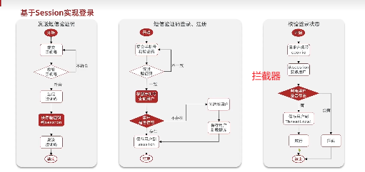
具体代码如下
贴心小提示：
具体逻辑上文已经分析，我们仅仅只需要按照提示的逻辑写出代码即可。
- 发送验证码 //传入手机号 + session 信息 ; 验证码 需要转入 session
@Override
public Result sendCode(String phone, HttpSession session) {
// 1.校验手机号
if (RegexUtils.isPhoneInvalid(phone)) {
// 2.如果不符合，返回错误信息
return Result.fail("手机号格式错误！");
}
// 3.符合，生成验证码
String code = RandomUtil.randomNumbers(6);
// 4.保存验证码到 session
session.setAttribute("code",code);
// 5.发送验证码
log.debug("发送短信验证码成功，验证码：{}", code);
// 返回ok
return Result.ok();
}
- 登录 传入的LoginForm DTO --获取到请求体中的信息 , 使用 session 实现校验
设置 一个 匹配 请求体 , 直接设置一个类 .
@Override
public Result login(LoginFormDTO loginForm, HttpSession session) {
// 1.校验手机号
String phone = loginForm.getPhone();
if (RegexUtils.isPhoneInvalid(phone)) {
// 2.如果不符合，返回错误信息
return Result.fail("手机号格式错误！");
}
// 3.校验验证码
Object cacheCode = session.getAttribute("code");
String code = loginForm.getCode();
if(cacheCode == null || !cacheCode.toString().equals(code)){
//3.不一致，报错
return Result.fail("验证码错误");
}
//一致，根据手机号查询用户
User user = query().eq("phone", phone).one();
//5.判断用户是否存在
if(user == null){
//不存在，则创建
user = createUserWithPhone(phone);
}
//7.保存用户信息到session中
session.setAttribute("user",user);
return Result.ok();
}
1.4、实现登录拦截功能
温馨小贴士：tomcat的运行原理
使用 的是 Session 存储到的是 服务器 的本地内存 中去的 ; 面向 集群式的服务器 一定会面对session 存储的问题 ;
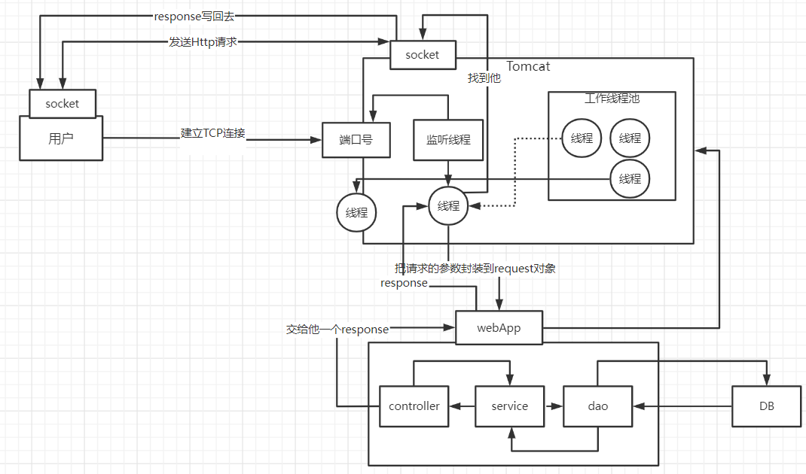
当用户发起请求时，会访问我们像tomcat注册的端口，任何程序想要运行，都需要有一个线程对当前端口号进行监听，tomcat也不例外，当监听线程知道用户想要和tomcat连接连接时，那会由监听线程创建socket连接，socket都是成对出现的，用户通过socket像互相传递数据，当tomcat端的socket接受到数据后，此时监听线程会从tomcat的线程池中取出一个线程执行用户请求，在我们的服务部署到tomcat后，线程会找到用户想要访问的工程，然后用这个线程转发到工程中的controller，service，dao中，并且访问对应的DB，在用户执行完请求后，再统一返回，再找到tomcat端的socket，再将数据写回到用户端的socket，完成请求和响应
通过以上讲解，我们可以得知 每个用户其实对应都是去找tomcat线程池中的一个线程来完成工作的， 使用完成后再进行回收，既然每个请求都是独立的，所以在每个用户去访问我们的工程时，我们可以使用threadlocal来做到线程隔离，每个线程操作自己的一份数据
温馨小贴士：关于threadlocal
如果小伙伴们看过threadLocal的源码，你会发现在threadLocal中，无论是他的put方法和他的get方法， 都是先从获得当前用户的线程，然后从线程中取出线程的成员变量map，只要线程不一样，map就不一样，所以可以通过这种方式来做到线程隔离

拦截器代码
public class LoginInterceptor implements HandlerInterceptor {
@Override
public boolean preHandle(HttpServletRequest request, HttpServletResponse response, Object handler) throws Exception {
//1.获取session
HttpSession session = request.getSession();
//2.获取session中的用户
Object user = session.getAttribute("user");
//3.判断用户是否存在
if(user == null){
//4.不存在，拦截，返回401状态码
response.setStatus(401);
return false;
}
//5.存在，保存用户信息到Threadlocal
UserHolder.saveUser((User)user);
//6.放行
return true;
}
}
让拦截器生效
使用 @Configuration 注释后, spring 会自动扫描整个项目包下的 标签, 可以实现 自动创建Bean对象 , 实现存储 IOC容器 . DI 依赖注入
@Configuration
public class MvcConfig implements WebMvcConfigurer {
@Resource
private StringRedisTemplate stringRedisTemplate;
@Override
public void addInterceptors(InterceptorRegistry registry) {
// 登录拦截器
registry.addInterceptor(new LoginInterceptor())
.excludePathPatterns(
"/shop/**",
"/voucher/**",
"/shop-type/**",
"/upload/**",
"/blog/hot",
"/user/code",
"/user/login"
).order(1);
// token刷新的拦截器
registry.addInterceptor(new RefreshTokenInterceptor(stringRedisTemplate)).addPathPatterns("/**").order(0);
}
}
1.5、隐藏用户敏感信息
我们通过浏览器观察到此时用户的全部信息都在，这样极为不靠谱，所以我们应当在返回用户信息之前，将用户的敏感信息进行隐藏，
将之前的完整对象转化为自己使用的 简单对象;
采用的核心思路就是书写一个UserDto对象，这个UserDto对象就没有敏感信息了，我们在返回前，将有用户敏感信息的User对象转化成没有敏感信息的UserDto对象，那么就能够避免这个尴尬的问题了
在登录方法处修改 , 拷贝属性, 返回值为 DTO 对象
//7.保存用户信息到session中
session.setAttribute("user", BeanUtils.copyProperties(user,UserDTO.class));
在拦截器处：果然是保存到 临时变量的储存线程
//5.存在，保存用户信息到Threadlocal
UserHolder.saveUser((UserDTO) user);
在UserHolder处：将user对象换成UserDTO
public class UserHolder {
private static final ThreadLocal<UserDTO> tl = new ThreadLocal<>();
public static void saveUser(UserDTO user){
tl.set(user);
}
public static UserDTO getUser(){
return tl.get();
}
public static void removeUser(){
tl.remove();
}
}
返回一点简单的信息就好 ;
1.6、session共享问题
核心思路分析：
每个tomcat中都有一份属于自己的session,假设用户第一次访问第一台tomcat，并且把自己的信息存放到第一台服务器的session中，但是第二次这个用户访问到了第二台tomcat，那么在第二台服务器上，肯定没有第一台服务器存放的session，所以此时 整个登录拦截功能就会出现问题，我们能如何解决这个问题呢？早期的方案是session拷贝，就是说虽然每个tomcat上都有不同的session，但是每当任意一台服务器的session修改时，都会同步给其他的Tomcat服务器的session，这样的话，就可以实现session的共享了
但是这种方案具有两个大问题
1、每台服务器中都有完整的一份session数据，服务器压力过大。
2、session拷贝数据时，可能会出现延迟
所以咱们后来采用的方案都是基于redis来完成，我们把session换成redis，redis数据本身就是共享的，就可以避免session共享的问题了
[原笔记图片附件缺失：.\Redis实战篇.assets\1653069893050.png]
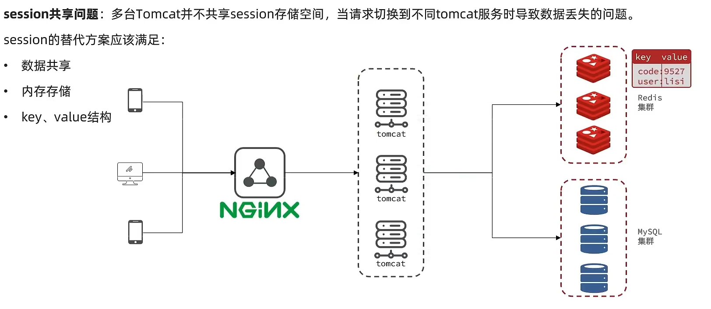
1.7.1、设计key的结构
首先我们要思考一下利用redis来存储数据，那么到底使用哪种结构呢？由于存入的数据比较简单，我们可以考虑使用String，或者是使用哈希，如下图，如果使用String，同学们注意他的value，用多占用一点空间，如果使用哈希，则他的value中只会存储他数据本身，如果不是特别在意内存，其实使用String就可以啦。
[原笔记图片附件缺失：.\Redis实战篇.assets\1653319261433.png]
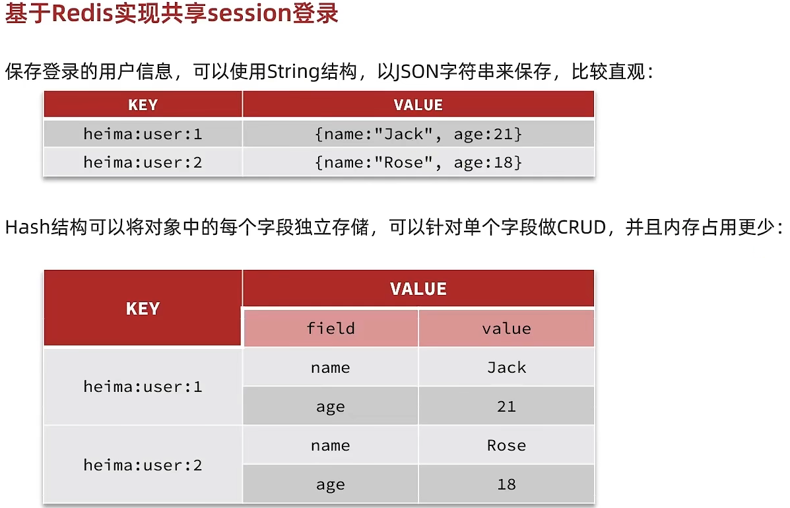
1.7.3、整体访问流程
当注册完成后，用户去登录会去校验用户提交的手机号和验证码，是否一致，如果一致，则根据手机号查询用户信息，不存在则新建，最后将用户数据保存到redis，并且生成token作为redis的key，当我们校验用户是否登录时，会去携带着token进行访问，从redis中取出token对应的value，判断是否存在这个数据，如果没有则拦截，如果存在则将其保存到threadLocal中，并且放行。
[原笔记图片附件缺失：.\Redis实战篇.assets\1653319474181.png]
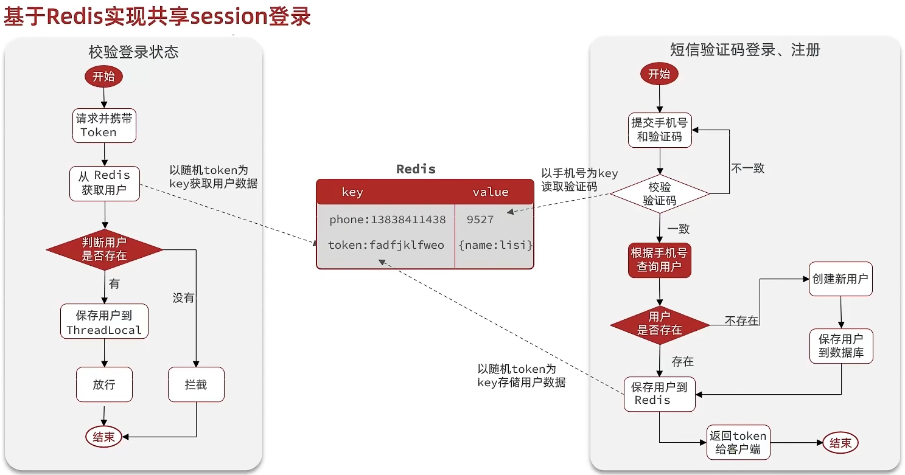
1.8 基于Redis实现短信登录
这里具体逻辑就不分析了，之前咱们已经重点分析过这个逻辑啦。
UserServiceImpl代码
@Override
public Result login(LoginFormDTO loginForm, HttpSession session) {
// 1.校验手机号
String phone = loginForm.getPhone();
if (RegexUtils.isPhoneInvalid(phone)) {
// 2.如果不符合，返回错误信息
return Result.fail("手机号格式错误！");
}
// 3.从redis获取验证码并校验
String cacheCode = stringRedisTemplate.opsForValue().get(LOGIN_CODE_KEY + phone);
String code = loginForm.getCode();
if (cacheCode == null || !cacheCode.equals(code)) {
// 不一致，报错
return Result.fail("验证码错误");
}
// 4.一致，根据手机号查询用户 select * from tb_user where phone = ?
实现存储数据到本地的数据库中去
User user = query().eq("phone", phone).one();
// 5.判断用户是否存在createUserWithPhone 会实现自动存储功能
if (user == null) {
// 6.不存在，创建新用户并保存
user = createUserWithPhone(phone);
}
// 7.保存用户信息到 redis中
// 7.1.随机生成token，作为登录令牌
String token = UUID.randomUUID().toString(true);
// 7.2.将User对象转为HashMap存储
UserDTO userDTO = BeanUtil.copyProperties(user, UserDTO.class);
Map<String, Object> userMap = BeanUtil.beanToMap(userDTO, new HashMap<>(),
CopyOptions.create()
.setIgnoreNullValue(true)
.setFieldValueEditor((fieldName, fieldValue) -> fieldValue.toString()));
// 7.3.存储
String tokenKey = LOGIN_USER_KEY + token;
//使用 put 只能实现单个覆盖写值 ;
//使用 putAll 可以实现全部整体覆盖
stringRedisTemplate.opsForHash().putAll(tokenKey, userMap);
// 7.4.设置token有效期
stringRedisTemplate.expire(tokenKey, LOGIN_USER_TTL, TimeUnit.MINUTES);
// 8.返回token
return Result.ok(token);
}
1.9 解决状态登录刷新问题
1.9.1 初始方案思路总结：
在这个方案中，他确实可以使用对应路径的拦截，同时刷新登录token令牌的存活时间，但是现在这个拦截器他只是拦截需要被拦截的路径，假设当前用户访问了一些不需要拦截的路径，那么这个拦截器就不会生效，所以此时令牌刷新的动作实际上就不会执行，所以这个方案他是存在问题的
[原笔记图片附件缺失：.\Redis实战篇.assets\1653320822964.png]
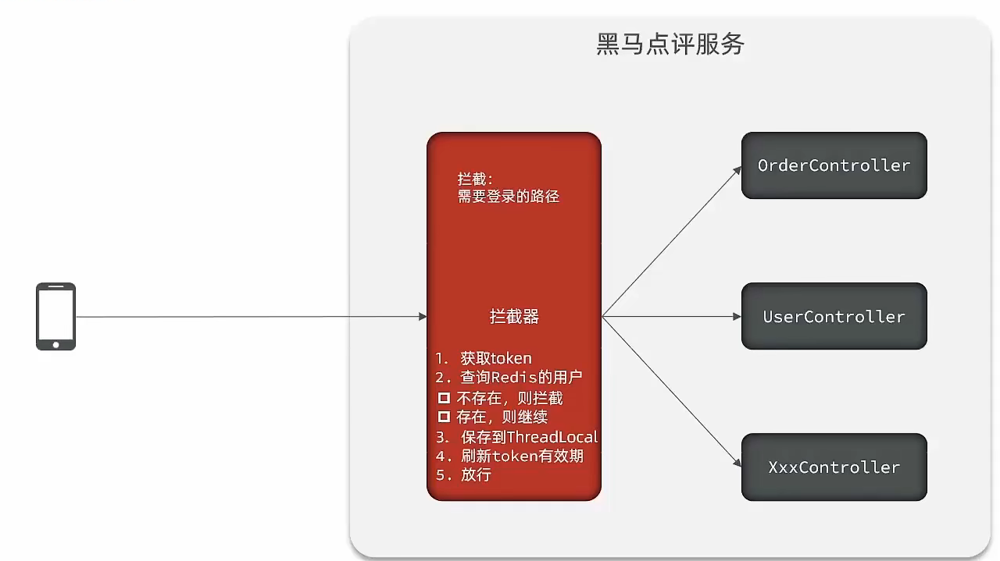
1.9.2 优化方案
既然之前的拦截器无法对不需要拦截的路径生效，那么我们可以添加一个拦截器，在第一个拦截器中拦截所有的路径，把第二个拦截器做的事情放入到第一个拦截器中，同时刷新令牌，因为第一个拦截器有了threadLocal的数据，所以此时第二个拦截器只需要判断拦截器中的user对象是否存在即可，完成整体刷新功能。
[原笔记图片附件缺失：.\Redis实战篇.assets\1653320764547.png]
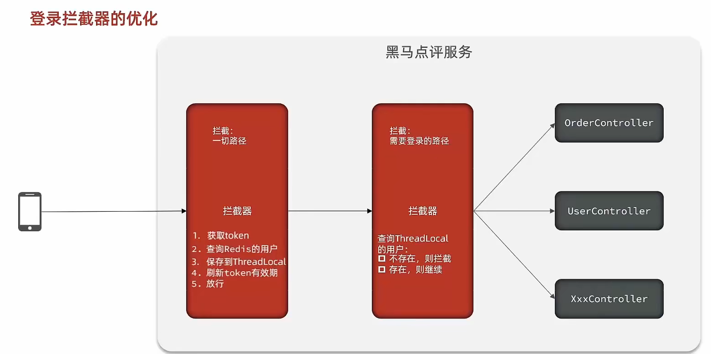
1.9.3 代码
这里可能会出现 类型出现错误 , StringRedisTemplate 中只能出现 String 类型 , 需要转化 id 字段
UserDTO userDTO = BeanUtil.copyProperties(user,UserDTO.class) ;
Map<String,Object> userMap = BeanUtil.beanToMap(userDTO , new HashMap<>(),
CopyOptions.create()
.setIgnoreNullValue(true)
.setFieldValueEditor((fieldName, fieldValue) -> fieldValue.toString())) ;
RefreshTokenInterceptor
public class RefreshTokenInterceptor implements HandlerInterceptor {
private StringRedisTemplate stringRedisTemplate;
public RefreshTokenInterceptor(StringRedisTemplate stringRedisTemplate) {
this.stringRedisTemplate = stringRedisTemplate;
}
@Override
public boolean preHandle(HttpServletRequest request, HttpServletResponse response, Object handler) throws Exception {
// 1.获取请求头中的token
String token = request.getHeader("authorization");
if (StrUtil.isBlank(token)) {
return true;
}
// 2.基于TOKEN获取redis中的用户
String key = LOGIN_USER_KEY + token;
//会自动补全为"+"--> ":"
Map<Object, Object> userMap = stringRedisTemplate.opsForHash().entries(key);
// 3.判断用户是否存在
if (userMap.isEmpty()) {
return true;
}
// 5.将查询到的hash数据转为UserDTO
UserDTO userDTO = BeanUtil.fillBeanWithMap(userMap, new UserDTO(), false);
// 6.存在，保存用户信息到 ThreadLocal
UserHolder.saveUser(userDTO);
// 7.刷新token有效期
stringRedisTemplate.expire(key, LOGIN_USER_TTL, TimeUnit.MINUTES);
// 8.放行
return true;
}
@Override
public void afterCompletion(HttpServletRequest request, HttpServletResponse response, Object handler, Exception ex) throws Exception {
// 移除用户
UserHolder.removeUser();
}
}
LoginInterceptor (修改使用 IOC 容器注入 )
public class LoginInterceptor implements HandlerInterceptor {
@Autowried
private StringRedisTemplate stringRedisTemple ;
public LoginInterceptor (StringRedisTemplate stringRedisTemplate ){
this stringRedisTemplate = stringRedisTemplate ;
}
@Override
public boolean preHandle(HttpServletRequest request, HttpServletResponse response, Object handler) throws Exception {
// 1.判断是否需要拦截（ThreadLocal中是否有用户）
if (UserHolder.getUser() == null) {
// 没有，需要拦截，设置状态码
response.setStatus(401);
// 拦截
return false;
}
// 有用户，则放行
return true;
}
}
2、商户查询缓存
2.1 什么是缓存?
缓存(Cache),就是数据交换的缓冲区**,俗称的缓存就是**缓冲区内的数据,一般从数据库中获取,存储于本地代码(例如:
例1:Static final ConcurrentHashMap<K,V> map = new ConcurrentHashMap<>(); 本地用于高并发
例2:static final Cache<K,V> USER_CACHE = CacheBuilder.newBuilder().build(); 用于redis等缓存
例3:Static final Map<K,V> map = new HashMap(); 本地缓存
由于其被Static修饰,所以随着类的加载而被加载到内存之中,作为本地缓存,由于其又被final修饰,所以其引用(例3:map)和对象(例3:new HashMap())之间的关系是固定的,不能改变,因此不用担心赋值( =)导致缓存失效;
2.1.1 为什么要使用缓存
一句话:因为速度快,好用
缓存数据存储于代码中,而代码运行在内存中,内存的读写性能远高于磁盘,缓存可以大大降低用户访问并发量带来的服务器读写压力
实际开发过程中,企业的数据量,少则几十万,多则几千万,这么大数据量,如果没有缓存来作为"避震器",系统是几乎撑不住的,所以企业会大量运用到缓存技术;
但是缓存也会增加代码复杂度和运营的成本:
[原笔记图片附件缺失：.\Redis实战篇.assets\image-20220523214414123.png]
2.1.2 如何使用缓存
实际开发中,会构筑多级缓存来使系统运行速度进一步提升,例如:本地缓存与redis中的缓存并发使用
浏览器缓存：主要是存在于浏览器端的缓存
**应用层缓存：**可以分为tomcat本地缓存，比如之前提到的map，或者是使用redis作为缓存
**数据库缓存：**在数据库中有一片空间是 buffer pool，增改查数据都会先加载到mysql的缓存中
**CPU缓存：**当代计算机最大的问题是 cpu性能提升了，但内存读写速度没有跟上，所以为了适应当下的情况，增加了cpu的L1，L2，L3级的缓存
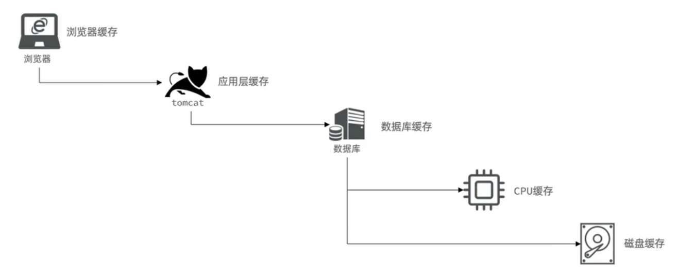
2.2 添加商户缓存
在我们查询商户信息时，我们是直接操作从数据库中去进行查询的，大致逻辑是这样，直接查询数据库那肯定慢咯，所以我们需要增加缓存
@GetMapping("/{id}")
public Result queryShopById(@PathVariable("id") Long id) {
//这里是直接查询数据库
return shopService.queryById(id);
}
2.2.1 、缓存模型和思路
标准的操作方式就是查询数据库之前先查询缓存，如果缓存数据存在，则直接从缓存中返回，如果缓存数据不存在，再查询数据库，然后将数据存入redis。
[原笔记图片附件缺失：.\Redis实战篇.assets\1653322097736.png]
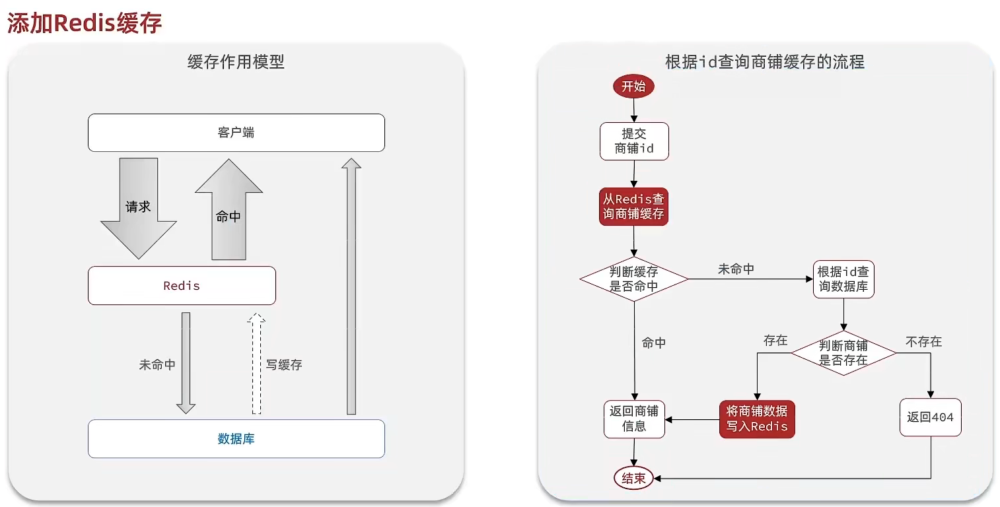
2.1.2、代码如下
代码思路：如果缓存有，则直接返回，如果缓存不存在，则查询数据库，然后存入redis。
[原笔记图片附件缺失：.\Redis实战篇.assets\1653322190155.png]
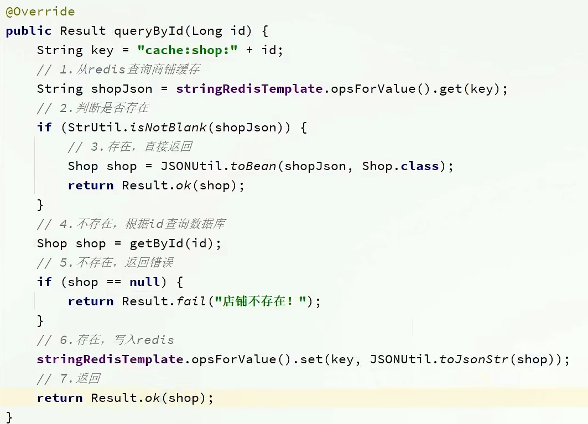
2.3 缓存更新策略
缓存更新是redis为了节约内存而设计出来的一个东西，主要是因为内存数据宝贵，当我们向redis插入太多数据，此时就可能会导致缓存中的数据过多，所以redis会对部分数据进行更新，或者把他叫为淘汰更合适。
**内存淘汰：**redis自动进行，当redis内存达到咱们设定的max-memery的时候，会自动触发淘汰机制，淘汰掉一些不重要的数据(可以自己设置策略方式)
**超时剔除：**当我们给redis设置了过期时间ttl之后，redis会将超时的数据进行删除，方便咱们继续使用缓存
**主动更新：**我们可以手动调用方法把缓存删掉，通常用于解决缓存和数据库不一致问题
[原笔记图片附件缺失：.\Redis实战篇.assets\1653322506393.png]
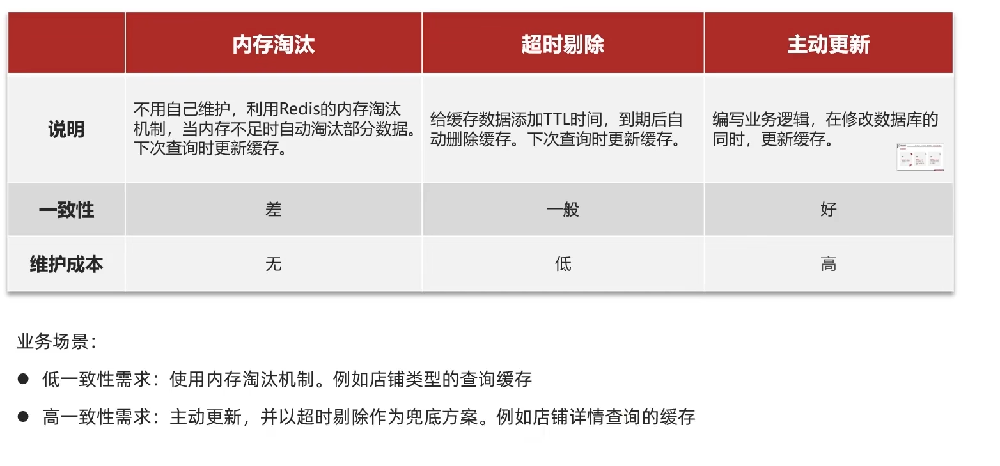
2.3.1 、数据库缓存不一致解决方案：
由于我们的缓存的数据源来自于数据库,而数据库的数据是会发生变化的,因此,如果当数据库中数据发生变化,而缓存却没有同步,此时就会有一致性问题存在,其后果是:
用户使用缓存中的过时数据,就会产生类似多线程数据安全问题,从而影响业务,产品口碑等;怎么解决呢？有如下几种方案
Cache Aside Pattern 人工编码方式：缓存调用者在更新完数据库后再去更新缓存，也称之为双写方案
纯人工操作 更加安全 ；
Read/Write Through Pattern : 由系统本身完成，数据库与缓存的问题交由系统本身去处理 . 一种服务;
Write Behind Caching Pattern ：调用者CRUD只操作缓存，其他线程去异步处理数据库，实现最终一致 .
优点 : 在缓存中实现 多次的CRUD，最后存入相当于只操作了一次，直接覆盖；
缺点：缓存使用的是内存存储，一旦内存宕机，数据全部丢失；
[原笔记图片附件缺失：.\Redis实战篇.assets\1653322857620.png]
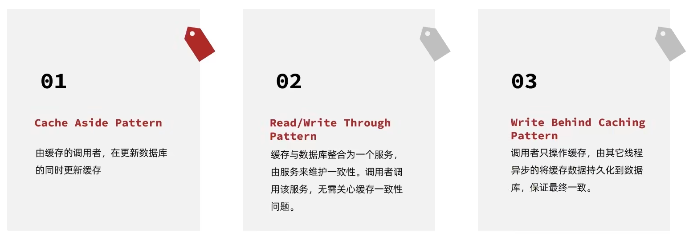
2.3.2 、数据库和缓存不一致采用什么方案
综合考虑使用方案一，但是方案一调用者如何处理呢？这里有几个问题
操作缓存和数据库时有三个问题需要考虑：
如果采用第一个方案，那么假设我们每次操作数据库后，都操作缓存，但是中间如果没有人查询，那么这个更新动作实际上只有最后一次生效，中间的更新动作意义并不大，我们可以把缓存删除，等待再次查询时，将缓存中的数据加载出来
删除缓存还是更新缓存？
更新缓存：每次更新数据库都更新缓存，无效写操作较多
删除缓存：更新数据库时让缓存失效，查询时再更新缓存
如何保证缓存与数据库的操作的同时成功或失败？
单体系统，将缓存与数据库操作放在一个事务
分布式系统，利用TCC等分布式事务方案
应该具体操作缓存还是操作数据库，我们应当是先操作数据库，再删除缓存，原因在于，如果你选择第一种方案，在两个线程并发来访问时，假设线程1先来，他先把缓存删了，此时线程2过来，他查询缓存数据并不存在，此时他写入缓存，当他写入缓存后，线程1再执行更新动作时，实际上写入的就是旧的数据，新的数据被旧数据覆盖了。
先操作缓存还是先操作数据库？
先删除缓存，再操作数据库 ， 多线程出错的概率较高
先操作数据库，再删除缓存 ， 多线程出现错误的概率等于没有．三种巧合的话没招；
[原笔记图片附件缺失：.\Redis实战篇.assets\1653323595206.png]
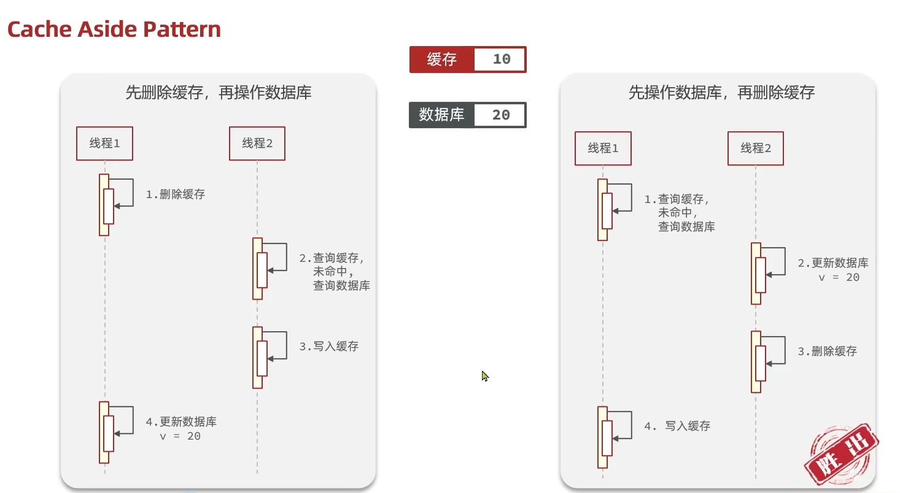
2.4 实现商铺和缓存与数据库双写一致
核心思路如下：
修改ShopController中的业务逻辑，满足下面的需求：
根据id查询店铺时，如果缓存未命中，则查询数据库，将数据库结果写入缓存，并设置超时时间
根据id修改店铺时，先修改数据库，再删除缓存
修改重点代码1：修改ShopServiceImpl的queryById方法
设置redis缓存时添加过期时间
[原笔记图片附件缺失：.\Redis实战篇.assets\1653325871232.png]
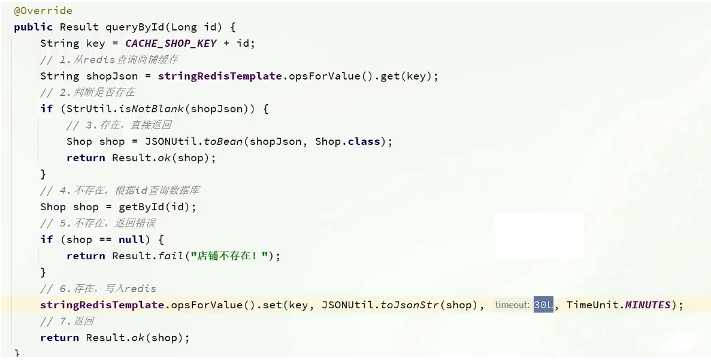
修改重点代码2
代码分析：通过之前的淘汰，我们确定了采用删除策略，来解决双写问题，当我们修改了数据之后，然后把缓存中的数据进行删除，查询时发现缓存中没有数据，则会从mysql中加载最新的数据，从而避免数据库和缓存不一致的问题
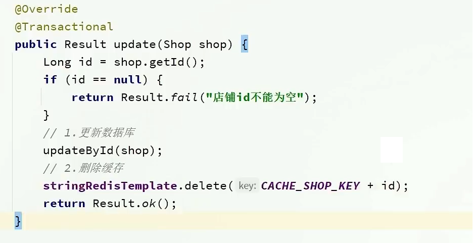
[原笔记图片附件缺失：.\Redis实战篇.assets\1653325929549.png]2.5 缓存穿透问题的解决思路
缓存穿透 ：缓存穿透是指客户端请求的数据在缓存中和数据库中都不存在，这样缓存永远不会生效，这些请求都会打到数据库。
常见的解决方案有两种：
缓存空对象
优点：实现简单，维护方便
缺点：
额外的内存消耗
可能造成短期的不一致
布隆过滤
优点：内存占用较少，没有多余key
缺点：
实现复杂
存在误判可能
缓存空对象思路分析：当我们客户端访问不存在的数据时，先请求redis，但是此时redis中没有数据，此时会访问到数据库，但是数据库中也没有数据，这个数据穿透了缓存，直击数据库，我们都知道数据库能够承载的并发不如redis这么高，如果大量的请求同时过来访问这种不存在的数据，这些请求就都会访问到数据库，简单的解决方案就是哪怕这个数据在数据库中也不存在，我们也把这个数据存入到redis中去，这样，下次用户过来访问这个不存在的数据，那么在redis中也能找到这个数据就不会进入到缓存了
布隆过滤：布隆过滤器其实采用的是哈希思想来解决这个问题，通过一个庞大的二进制数组，走哈希思想去判断当前这个要查询的这个数据是否存在，如果布隆过滤器判断存在，则放行，这个请求会去访问redis，哪怕此时redis中的数据过期了，但是数据库中一定存在这个数据，在数据库中查询出来这个数据后，再将其放入到redis中，
假设布隆过滤器判断这个数据不存在，则直接返回
这种方式优点在于节约内存空间，存在误判，误判原因在于：布隆过滤器走的是哈希思想，只要哈希思想，就可能存在哈希冲突
[原笔记图片附件缺失：.\Redis实战篇.assets\1653326156516.png]
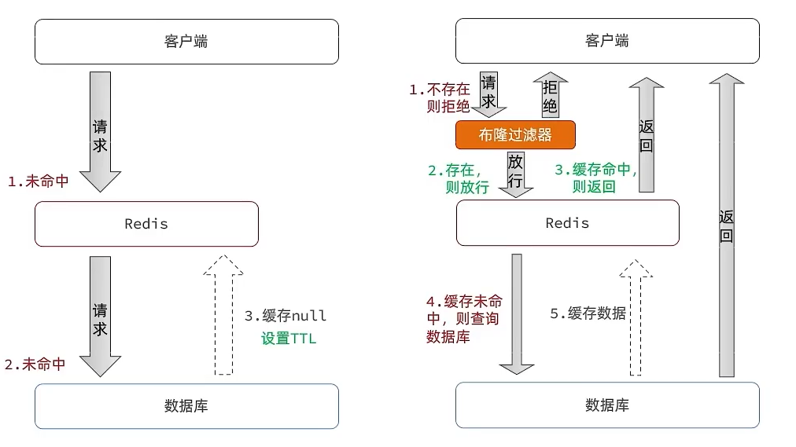
2.6 编码解决商品查询的缓存穿透问题：(没商品一直访问一直穿透缓存层)
核心思路如下：
在原来的逻辑中，我们如果发现这个数据在mysql中不存在，直接就返回404了，这样是会存在缓存穿透问题的
现在的逻辑中：如果这个数据不存在，我们不会返回404 ，还是会把这个数据写入到Redis中，并且将value设置为空，欧当再次发起查询时，我们如果发现命中之后，判断这个value是否是null，如果是null，则是之前写入的数据，证明是缓存穿透数据，如果不是，则直接返回数据。
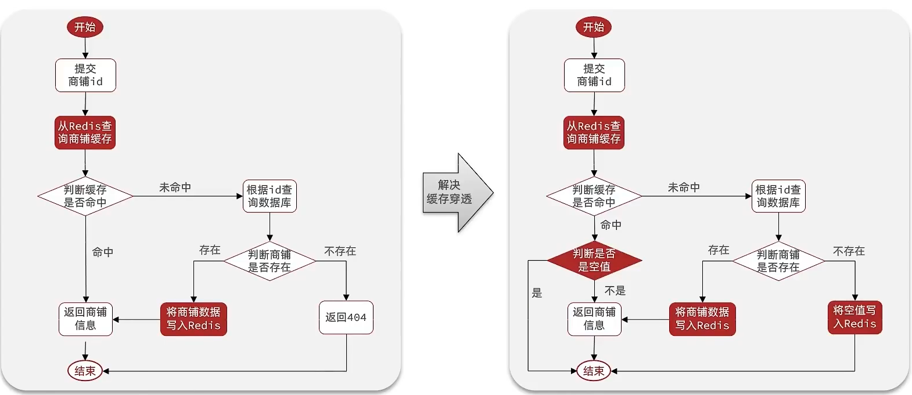
[原笔记图片附件缺失：.\Redis实战篇.assets\1653327124561.png] 小总结：
缓存穿透产生的原因是什么？
- 用户请求的数据在缓存中和数据库中都不存在，不断发起这样的请求，给数据库带来巨大压力
缓存穿透的解决方案有哪些？
- 缓存null值
- 布隆过滤 , 一种哈希的算法实现 快速判断是否存在 ;
- 上面的 太复杂 还不一定有效 ;
- 增强id的复杂度，避免被猜测id规律
- 做好数据的基础格式校验
- 加强用户权限校验
- 做好热点参数的限流
2.7 缓存雪崩问题及解决思路(服务宕机 , key失效 --> 访问服务器)
缓存雪崩是指在同一时段大量的缓存key同时失效或者Redis服务宕机，导致大量请求到达数据库，带来巨大压力。
解决方案：
- 给不同的Key的TTL添加随机值 --> key 一时间全部都失效的解决方法 ;
下面都是 SpringCloud 微服务中的 内容 ;
- 利用Redis集群提高服务的可用性
- 给缓存业务添加降级限流策略
- 给业务添加多级缓存
[原笔记图片附件缺失：.\Redis实战篇.assets\1653327884526.png]
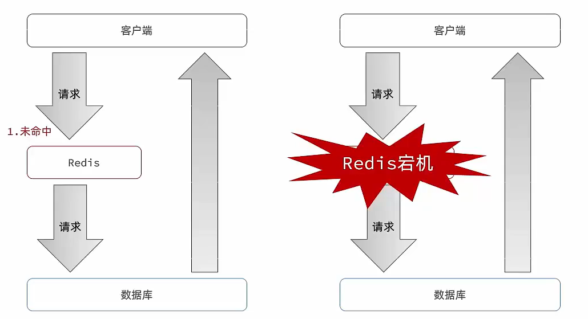
2.8 缓存击穿问题及解决思路 (处理高并发访问)
缓存击穿问题也叫热点Key问题，就是一个被高并发访问并且缓存重建业务较复杂的key突然失效了，无数的请求访问会在瞬间给数据库带来巨大的冲击。
常见的解决方案有两种：
- 互斥锁
- 逻辑过期
逻辑分析：假设线程1在查询缓存之后，本来应该去查询数据库，然后把这个数据重新加载到缓存的，此时只要线程1走完这个逻辑，其他线程就都能从缓存中加载这些数据了，
但是假设在线程1没有走完的时候，后续的线程2，线程3，线程4同时过来访问当前这个方法，
那么这些线程都不能从缓存中查询到数据，那么他们就会同一时刻来访问查询缓存，都没查到
同一时间去访问数据库，同时的去执行数据库代码，对数据库访问压力过大
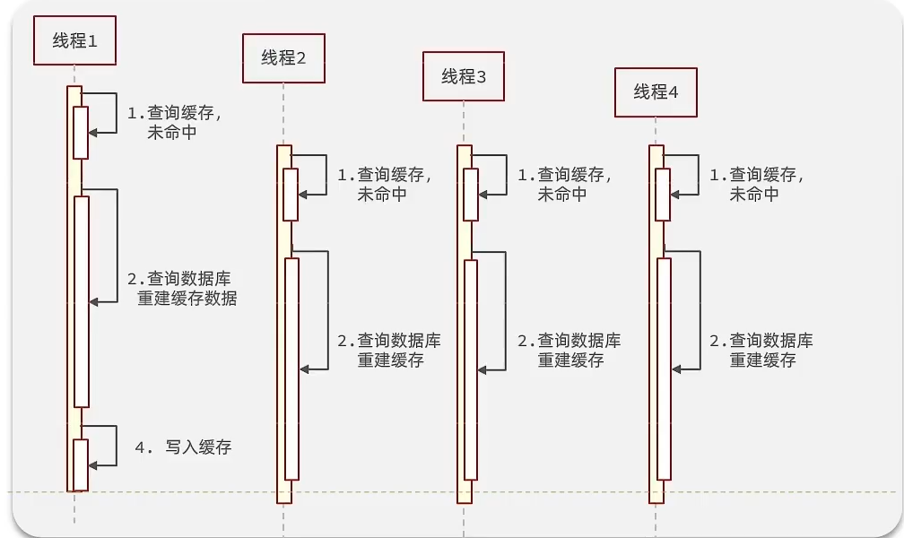
[原笔记图片附件缺失：.\Redis实战篇.assets\1653328022622.png]
解决方案一、使用锁来解决：
因为锁能实现互斥性。假设线程过来，只能一个人一个人的来访问数据库，从而避免对于数据库访问压力过大，但这也会影响查询的性能，因为此时会让查询的性能从并行变成了串行，我们可以采用
tryLock方法 + double check来解决这样的问题。
假设现在线程1过来访问，他查询缓存没有命中，但是此时他获得到了锁的资源，那么线程1就会一个人去执行逻辑，假设现在线程2过来，线程2在执行过程中，并没有获得到锁，那么线程2就可以进行到休眠，直到线程1把锁释放后，线程2获得到锁，然后再来执行逻辑，此时就能够从缓存中拿到数据了。
[原笔记图片附件缺失：.\Redis实战篇.assets\1653328288627.png]
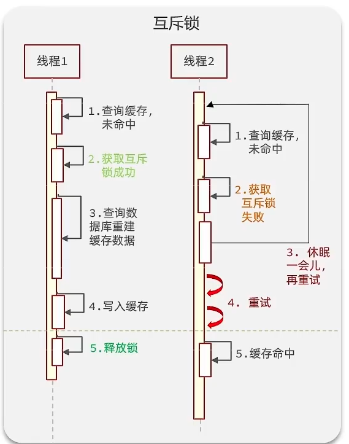
解决方案二、逻辑过期方案
方案分析：我们之所以会出现这个缓存击穿问题，主要原因是在于我们对key设置了过期时间，假设我们不设置过期时间，其实就不会有缓存击穿的问题，但是不设置过期时间，这样数据不就一直占用我们内存了吗，我们可以采用逻辑过期方案。
我们把过期时间设置在 redis的value中，注意：这个过期时间并不会直接作用于redis，而是我们后续通过逻辑去处理。假设线程1去查询缓存，然后从value中判断出来当前的数据已经过期了，此时线程1去获得互斥锁，那么其他线程会进行阻塞，获得了锁的线程他会开启一个 线程去进行 以前的重构数据的逻辑，直到新开的线程完成这个逻辑后，才释放锁， 而线程1直接进行返回，假设现在线程3过来访问，由于线程线程2持有着锁，所以线程3无法获得锁，线程3也直接返回数据，只有等到新开的线程2把重建数据构建完后，其他线程才能走返回正确的数据。
这种方案巧妙在于，异步的构建缓存，缺点在于在构建完缓存之前，返回的都是脏数据。
[原笔记图片附件缺失：.\Redis实战篇.assets\1653328663897.png]
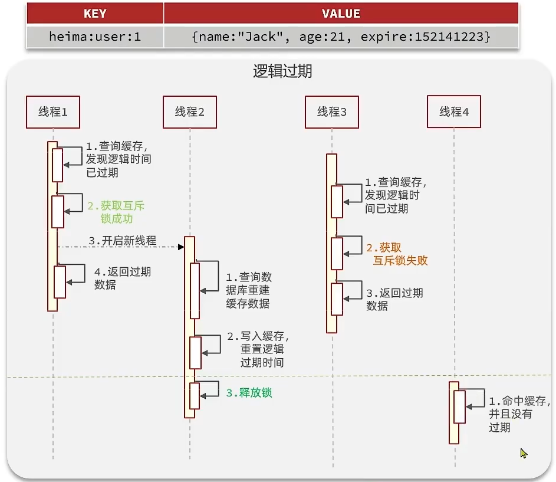
进行对比
**互斥锁方案：**由于保证了互斥性，所以数据一致，且实现简单，因为仅仅只需要加一把锁而已，也没其他的事情需要操心，所以没有额外的内存消耗，缺点在于有锁就有死锁问题的发生，且只能串行执行性能肯定受到影响
逻辑过期方案： 线程读取过程中不需要等待，性能好，有一个额外的线程持有锁去进行重构数据，但是在重构数据完成前，其他的线程只能返回之前的数据，且实现起来麻烦
[原笔记图片附件缺失：.\Redis实战篇.assets\1653357522914.png]
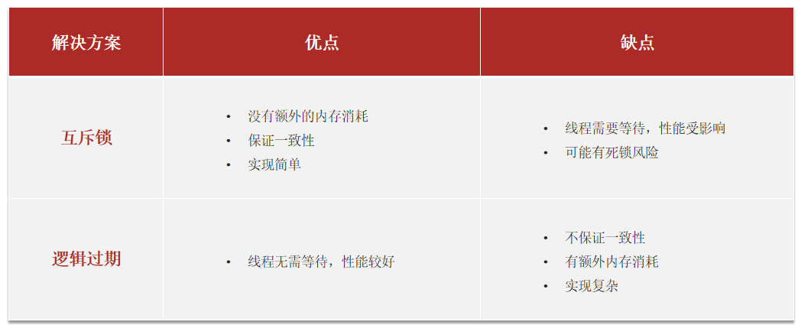
2.9 利用互斥锁解决缓存击穿问题
核心思路：相较于原来从缓存中查询不到数据后直接查询数据库而言，现在的方案是 进行查询之后，如果从缓存没有查询到数据，则进行互斥锁的获取，获取互斥锁后，判断是否获得到了锁，如果没有获得到，则休眠，过一会再进行尝试，直到获取到锁为止，才能进行查询
如果获取到了锁的线程，再去进行查询，查询后将数据写入redis，再释放锁，返回数据，利用互斥锁就能保证只有一个线程去执行操作数据库的逻辑，防止缓存击穿
[原笔记图片附件缺失：.\Redis实战篇.assets\1653357860001.png]
操作锁的代码：
核心思路就是利用redis的setnx方法来表示获取锁，该方法含义是redis中如果没有这个key，则插入成功，返回1，在stringRedisTemplate中返回true， 如果有这个key则插入失败，则返回0，在stringRedisTemplate返回false，我们可以通过true，或者是false，来表示是否有线程成功插入key，成功插入的key的线程我们认为他就是获得到锁的线程。
private boolean tryLock(String key) {
Boolean flag = stringRedisTemplate.opsForValue().setIfAbsent(key, "1", 10, TimeUnit.SECONDS);
return BooleanUtil.isTrue(flag);
}
private void unlock(String key) {
stringRedisTemplate.delete(key);
}
操作代码：
public Shop queryWithMutex(Long id) {
String key = CACHE_SHOP_KEY + id;
// 1、从redis中查询商铺缓存
String shopJson = stringRedisTemplate.opsForValue().get("key");
// 2、判断是否存在
if (StrUtil.isNotBlank(shopJson)) {
// 存在,直接返回
return JSONUtil.toBean(shopJson, Shop.class);
}
//判断命中的值是否是空值
if (shopJson != null) {
//返回一个错误信息
return null;
}
// 4.实现缓存重构
//4.1 获取互斥锁
String lockKey = "lock:shop:" + id;
Shop shop = null;
try {
boolean isLock = tryLock(lockKey);
// 4.2 判断否获取成功
if(!isLock){
//4.3 失败，则休眠重试
Thread.sleep(50);
return queryWithMutex(id);
}
//4.4 成功，根据id查询数据库
shop = getById(id);
// 5.不存在，返回错误
if(shop == null){
//将空值写入redis
stringRedisTemplate.opsForValue().set(key,"",CACHE_NULL_TTL,TimeUnit.MINUTES);
//返回错误信息
return null;
}
//6.写入redis
stringRedisTemplate.opsForValue().set(key,JSONUtil.toJsonStr(shop),CACHE_NULL_TTL,TimeUnit.MINUTES);
}catch (Exception e){
throw new RuntimeException(e);
}
finally {
//7.释放互斥锁
unlock(lockKey);
}
return shop;
}
3.利用逻辑过期解决缓存击穿问题
需求：修改根据id查询商铺的业务，基于逻辑过期方式来解决缓存击穿问题
思路分析：当用户开始查询redis时，判断是否命中，如果没有命中则直接返回空数据，不查询数据库，而一旦命中后，将value取出，判断value中的过期时间是否满足，如果没有过期，则直接返回redis中的数据，如果过期，则在开启独立线程后直接返回之前的数据，独立线程去重构数据，重构完成后释放互斥锁。
如果封装数据：因为现在redis中存储的数据的value需要带上过期时间，此时要么你去修改原来的实体类，要么你
步骤一、
新建一个实体类，我们采用第二个方案，这个方案，对原来代码没有侵入性。
@Data
public class RedisData {
private LocalDateTime expireTime;
private Object data;
}
步骤二、
在ShopServiceImpl 新增此方法，利用单元测试进行缓存预热
在测试类中
步骤三：正式代码
ShopServiceImpl
private static final ExecutorService CACHE_REBUILD_EXECUTOR = Executors.newFixedThreadPool(10);
public Shop queryWithLogicalExpire( Long id ) {
String key = CACHE_SHOP_KEY + id;
// 1.从redis查询商铺缓存
String json = stringRedisTemplate.opsForValue().get(key);
// 2.判断是否存在
if (StrUtil.isBlank(json)) {
// 3.存在，直接返回
return null;
}
// 4.命中，需要先把json反序列化为对象
RedisData redisData = JSONUtil.toBean(json, RedisData.class);
Shop shop = JSONUtil.toBean((JSONObject) redisData.getData(), Shop.class);
LocalDateTime expireTime = redisData.getExpireTime();
// 5.判断是否过期
if(expireTime.isAfter(LocalDateTime.now())) {
// 5.1.未过期，直接返回店铺信息
return shop;
}
// 5.2.已过期，需要缓存重建
// 6.缓存重建
// 6.1.获取互斥锁
String lockKey = LOCK_SHOP_KEY + id;
boolean isLock = tryLock(lockKey);
// 6.2.判断是否获取锁成功
if (isLock){
CACHE_REBUILD_EXECUTOR.submit( ()->{
try{
//重建缓存
this.saveShop2Redis(id,20L);
}catch (Exception e){
throw new RuntimeException(e);
}finally {
unlock(lockKey);
}
});
}
// 6.4.返回过期的商铺信息
return shop;
}
3.1、封装Redis工具类
基于StringRedisTemplate封装一个缓存工具类，满足下列需求：
- 方法1：将任意Java对象序列化为json并存储在string类型的key中，并且可以设置TTL过期时间
- 方法2：将任意Java对象序列化为json并存储在string类型的key中，并且可以设置逻辑过期时间，用于处理缓
存击穿问题
- 方法3：根据指定的key查询缓存，并反序列化为指定类型，利用缓存空值的方式解决缓存穿透问题
- 方法4：根据指定的key查询缓存，并反序列化为指定类型，需要利用逻辑过期解决缓存击穿问题
将逻辑进行封装
@Slf4j
@Component
public class CacheClient {
private final StringRedisTemplate stringRedisTemplate;
private static final ExecutorService CACHE_REBUILD_EXECUTOR = Executors.newFixedThreadPool(10);
public CacheClient(StringRedisTemplate stringRedisTemplate) {
this.stringRedisTemplate = stringRedisTemplate;
}
public void set(String key, Object value, Long time, TimeUnit unit) {
stringRedisTemplate.opsForValue().set(key, JSONUtil.toJsonStr(value), time, unit);
}
public void setWithLogicalExpire(String key, Object value, Long time, TimeUnit unit) {
// 设置逻辑过期
RedisData redisData = new RedisData();
redisData.setData(value);
redisData.setExpireTime(LocalDateTime.now().plusSeconds(unit.toSeconds(time)));
// 写入Redis
stringRedisTemplate.opsForValue().set(key, JSONUtil.toJsonStr(redisData));
}
public <R,ID> R queryWithPassThrough(
String keyPrefix, ID id, Class<R> type, Function<ID, R> dbFallback, Long time, TimeUnit unit){
String key = keyPrefix + id;
// 1.从redis查询商铺缓存
String json = stringRedisTemplate.opsForValue().get(key);
// 2.判断是否存在
if (StrUtil.isNotBlank(json)) {
// 3.存在，直接返回
return JSONUtil.toBean(json, type);
}
// 判断命中的是否是空值
if (json != null) {
// 返回一个错误信息
return null;
}
// 4.不存在，根据id查询数据库
R r = dbFallback.apply(id);
// 5.不存在，返回错误
if (r == null) {
// 将空值写入redis
stringRedisTemplate.opsForValue().set(key, "", CACHE_NULL_TTL, TimeUnit.MINUTES);
// 返回错误信息
return null;
}
// 6.存在，写入redis
this.set(key, r, time, unit);
return r;
}
public <R, ID> R queryWithLogicalExpire(
String keyPrefix, ID id, Class<R> type, Function<ID, R> dbFallback, Long time, TimeUnit unit) {
String key = keyPrefix + id;
// 1.从redis查询商铺缓存
String json = stringRedisTemplate.opsForValue().get(key);
// 2.判断是否存在
if (StrUtil.isBlank(json)) {
// 3.存在，直接返回
return null;
}
// 4.命中，需要先把json反序列化为对象
RedisData redisData = JSONUtil.toBean(json, RedisData.class);
R r = JSONUtil.toBean((JSONObject) redisData.getData(), type);
LocalDateTime expireTime = redisData.getExpireTime();
// 5.判断是否过期
if(expireTime.isAfter(LocalDateTime.now())) {
// 5.1.未过期，直接返回店铺信息
return r;
}
// 5.2.已过期，需要缓存重建
// 6.缓存重建
// 6.1.获取互斥锁
String lockKey = LOCK_SHOP_KEY + id;
boolean isLock = tryLock(lockKey);
// 6.2.判断是否获取锁成功
if (isLock){
// 6.3.成功，开启独立线程，实现缓存重建
CACHE_REBUILD_EXECUTOR.submit(() -> {
try {
// 查询数据库
R newR = dbFallback.apply(id);
// 重建缓存
this.setWithLogicalExpire(key, newR, time, unit);
} catch (Exception e) {
throw new RuntimeException(e);
}finally {
// 释放锁
unlock(lockKey);
}
});
}
// 6.4.返回过期的商铺信息
return r;
}
public <R, ID> R queryWithMutex(
String keyPrefix, ID id, Class<R> type, Function<ID, R> dbFallback, Long time, TimeUnit unit) {
String key = keyPrefix + id;
// 1.从redis查询商铺缓存
String shopJson = stringRedisTemplate.opsForValue().get(key);
// 2.判断是否存在
if (StrUtil.isNotBlank(shopJson)) {
// 3.存在，直接返回
return JSONUtil.toBean(shopJson, type);
}
// 判断命中的是否是空值
if (shopJson != null) {
// 返回一个错误信息
return null;
}
// 4.实现缓存重建
// 4.1.获取互斥锁
String lockKey = LOCK_SHOP_KEY + id;
R r = null;
try {
boolean isLock = tryLock(lockKey);
// 4.2.判断是否获取成功
if (!isLock) {
// 4.3.获取锁失败，休眠并重试
Thread.sleep(50);
return queryWithMutex(keyPrefix, id, type, dbFallback, time, unit);
}
// 4.4.获取锁成功，根据id查询数据库
r = dbFallback.apply(id);
// 5.不存在，返回错误
if (r == null) {
// 将空值写入redis
stringRedisTemplate.opsForValue().set(key, "", CACHE_NULL_TTL, TimeUnit.MINUTES);
// 返回错误信息
return null;
}
// 6.存在，写入redis
this.set(key, r, time, unit);
} catch (InterruptedException e) {
throw new RuntimeException(e);
}finally {
// 7.释放锁
unlock(lockKey);
}
// 8.返回
return r;
}
private boolean tryLock(String key) {
Boolean flag = stringRedisTemplate.opsForValue().setIfAbsent(key, "1", 10, TimeUnit.SECONDS);
return BooleanUtil.isTrue(flag);
}
private void unlock(String key) {
stringRedisTemplate.delete(key);
}
}
在ShopServiceImpl 中
@Resource
private CacheClient cacheClient;
@Override
public Result queryById(Long id) {
// 解决缓存穿透
Shop shop = cacheClient
.queryWithPassThrough(CACHE_SHOP_KEY, id, Shop.class, this::getById, CACHE_SHOP_TTL, TimeUnit.MINUTES);
// 互斥锁解决缓存击穿
// Shop shop = cacheClient
// .queryWithMutex(CACHE_SHOP_KEY, id, Shop.class, this::getById, CACHE_SHOP_TTL, TimeUnit.MINUTES);
// 逻辑过期解决缓存击穿
// Shop shop = cacheClient
// .queryWithLogicalExpire(CACHE_SHOP_KEY, id, Shop.class, this::getById, 20L, TimeUnit.SECONDS);
if (shop == null) {
return Result.fail("店铺不存在！");
}
// 7.返回
return Result.ok(shop);
}
3、优惠卷秒杀
3.1 -全局唯一ID
每个店铺都可以发布优惠券：
当用户抢购时，就会生成订单并保存到tb_voucher_order这张表中，而订单表如果使用数据库自增ID就存在一些问题：
- id的规律性太明显
- 受单表数据量的限制
场景分析：如果我们的id具有太明显的规则，用户 或者说商业对手很容易猜测出来我们的一些敏感信息，比如商城在一天时间内，卖出了多少单，这明显不合适。
场景分析二：随着我们商城规模越来越大，mysql的单表的容量不宜超过500W，数据量过大之后，我们要进行拆库拆表，但拆分表了之后，他们从逻辑上讲他们是同一张表，所以他们的id是不能一样的， 于是乎我们需要保证id的唯一性。
全局ID生成器，是一种在分布式系统下用来生成全局唯一ID的工具，一般要满足下列特性：
[原笔记图片附件缺失：.\Redis实战篇.assets\1653363100502.png]
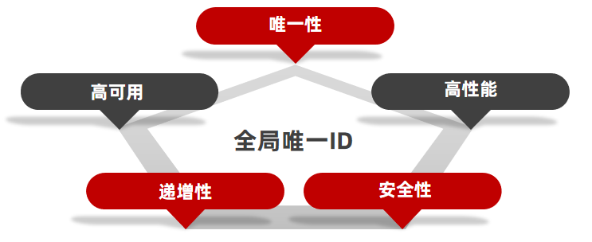
为了增加ID的安全性，我们可以不直接使用Redis自增的数值，而是拼接一些其它信息：
[原笔记图片附件缺失：.\Redis实战篇.assets\1653363172079.png] ID的组成部分：符号位：1bit，永远为0
时间戳：31bit，以秒为单位，可以使用69年
序列号：32bit，秒内的计数器，支持每秒产生2^32个不同ID
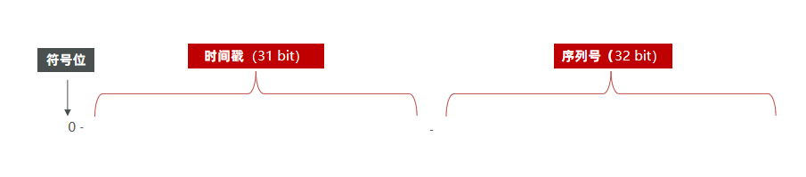
时间戳：31bit，以秒为单位，可以使用69年
序列号：32bit，秒内的计数器，支持每秒产生2^32个不同ID
3.2 -Redis实现全局唯一Id
@Component
public class RedisIdWorker {
/**
* 开始时间戳
*/
private static final long BEGIN_TIMESTAMP = 1640995200L;
/**
* 序列号的位数
*/
private static final int COUNT_BITS = 32;
private StringRedisTemplate stringRedisTemplate;
public RedisIdWorker(StringRedisTemplate stringRedisTemplate) {
this.stringRedisTemplate = stringRedisTemplate;
}
public long nextId(String keyPrefix) {
// 1.生成时间戳
LocalDateTime now = LocalDateTime.now();
long nowSecond = now.toEpochSecond(ZoneOffset.UTC);
long timestamp = nowSecond - BEGIN_TIMESTAMP;
// 2.生成序列号
// 2.1.获取当前日期，精确到天
String date = now.format(DateTimeFormatter.ofPattern("yyyy:MM:dd"));
// 2.2.自增长
long count = stringRedisTemplate.opsForValue().increment("icr:" + keyPrefix + ":" + date);
// 3.拼接并返回
return timestamp << COUNT_BITS | count;
}
}
测试类
知识小贴士：关于countdownlatch
countdownlatch名为信号枪：主要的作用是同步协调在多线程的等待于唤醒问题
我们如果没有CountDownLatch ，那么由于程序是异步的，当异步程序没有执行完时，主线程就已经执行完了，然后我们期望的是分线程全部走完之后，主线程再走，所以我们此时需要使用到CountDownLatch
CountDownLatch 中有两个最重要的方法
1、countDown
2、await
await 方法 是阻塞方法，我们担心分线程没有执行完时，main线程就先执行，所以使用await可以让main线程阻塞，那么什么时候main线程不再阻塞呢？
当CountDownLatch 内部维护的 变量变为0时，就不再阻塞，直接放行，那么什么时候CountDownLatch 维护的变量变为0 呢，
我们只需要调用一次countDown ，内部变量就减少1，我们让分线程和变量绑定， 执行完一个分线程就减少一个变量，
当分线程全部走完，CountDownLatch 维护的变量就是0，此时await就不再阻塞，统计出来的时间也就是所有分线程执行完后的时间。
@Test
void testIdWorker() throws InterruptedException {
CountDownLatch latch = new CountDownLatch(300);
Runnable task = () -> {
for (int i = 0; i < 100; i++) {
long id = redisIdWorker.nextId("order");
System.out.println("id = " + id);
}
latch.countDown();
};
下面的提交是 执行线程任务 ;
long begin = System.currentTimeMillis();
for (int i = 0; i < 300; i++) {
es.submit(task);
}
latch.await();
long end = System.currentTimeMillis();
System.out.println("time = " + (end - begin));
}
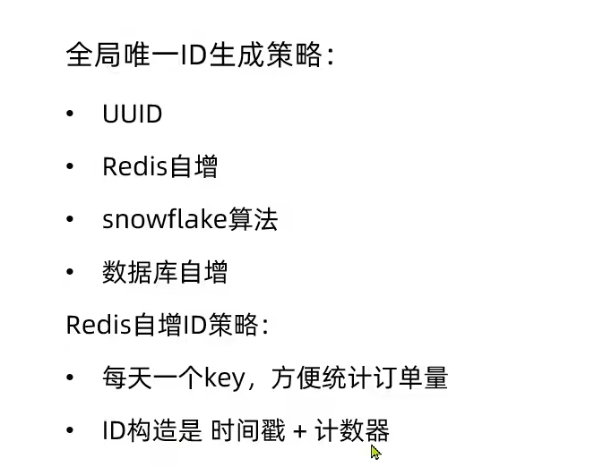
3.3 添加优惠卷
每个店铺都可以发布优惠券，分为平价券和特价券。平价券可以任意购买，而特价券需要秒杀抢购：
tb_voucher：优惠券的基本信息，优惠金额、使用规则等
tb_seckill_voucher：优惠券的库存、开始抢购时间，结束抢购时间。特价优惠券才需要填写这些信息
平价卷由于优惠力度并不是很大，所以是可以任意领取
而代金券由于优惠力度大，所以像第二种卷，就得限制数量，从表结构上也能看出，特价卷除了具有优惠卷的基本信息以外，还具有库存，抢购时间，结束时间等等字段
**新增普通卷代码： **VoucherController
@PostMapping
public Result addVoucher(@RequestBody Voucher voucher) {
voucherService.save(voucher);
return Result.ok(voucher.getId());
}
新增秒杀卷代码：
VoucherController
@PostMapping("seckill")
public Result addSeckillVoucher(@RequestBody Voucher voucher) {
voucherService.addSeckillVoucher(voucher);
return Result.ok(voucher.getId());
}
VoucherServiceImpl
@Override
@Transactional
public void addSeckillVoucher(Voucher voucher) {
// 保存优惠券
save(voucher);
// 保存秒杀信息
SeckillVoucher seckillVoucher = new SeckillVoucher();
seckillVoucher.setVoucherId(voucher.getId());
seckillVoucher.setStock(voucher.getStock());
seckillVoucher.setBeginTime(voucher.getBeginTime());
seckillVoucher.setEndTime(voucher.getEndTime());
seckillVoucherService.save(seckillVoucher);
// 保存秒杀库存到Redis中
stringRedisTemplate.opsForValue().set(SECKILL_STOCK_KEY + voucher.getId(), voucher.getStock().toString());
}
3.4 实现秒杀下单
下单核心思路：当我们点击抢购时，会触发右侧的请求，我们只需要编写对应的controller即可
[原笔记图片附件缺失：.\Redis实战篇.assets\1653365839526.png]
秒杀下单应该思考的内容：
下单时需要判断两点：
- 秒杀是否开始或结束，如果尚未开始或已经结束则无法下单
- 库存是否充足，不足则无法下单
下单核心逻辑分析：
当用户开始进行下单，我们应当去查询优惠卷信息，查询到优惠卷信息，判断是否满足秒杀条件
比如时间是否充足，如果时间充足，则进一步判断库存是否足够，如果两者都满足，则扣减库存，创建订单，然后返回订单id，如果有一个条件不满足则直接结束。
[原笔记图片附件缺失：.\Redis实战篇.assets\1653366238564.png]
VoucherOrderServiceImpl
@Override
public Result seckillVoucher(Long voucherId) {
// 1.查询优惠券
SeckillVoucher voucher = seckillVoucherService.getById(voucherId);
// 2.判断秒杀是否开始
if (voucher.getBeginTime().isAfter(LocalDateTime.now())) {
// 尚未开始
return Result.fail("秒杀尚未开始！");
}
// 3.判断秒杀是否已经结束
if (voucher.getEndTime().isBefore(LocalDateTime.now())) {
// 尚未开始
return Result.fail("秒杀已经结束！");
}
// 4.判断库存是否充足
if (voucher.getStock() < 1) {
// 库存不足
return Result.fail("库存不足！");
}
//5，扣减库存
boolean success = seckillVoucherService.update()
.setSql("stock= stock -1")
.eq("voucher_id", voucherId).update();
if (!success) {
//扣减库存
return Result.fail("库存不足！");
}
//6.创建订单
VoucherOrder voucherOrder = new VoucherOrder();
// 6.1.订单id
long orderId = redisIdWorker.nextId("order");
voucherOrder.setId(orderId);
// 6.2.用户id
Long userId = UserHolder.getUser().getId();
voucherOrder.setUserId(userId);
// 6.3.代金券id
voucherOrder.setVoucherId(voucherId);
save(voucherOrder);
return Result.ok(orderId);
}
3.5 库存超卖问题分析
有关超卖问题分析：在我们原有代码中是这么写的
if (voucher.getStock() < 1) {
// 库存不足
return Result.fail("库存不足！");
}
//5，扣减库存
boolean success = seckillVoucherService.update()
.setSql("stock= stock -1")
.eq("voucher_id", voucherId).update();
if (!success) {
//扣减库存
return Result.fail("库存不足！");
}
假设线程1过来查询库存，判断出来库存大于1，正准备去扣减库存，但是还没有来得及去扣减，此时线程2过来，线程2也去查询库存，发现这个数量一定也大于1，那么这两个线程都会去扣减库存，最终多个线程相当于一起去扣减库存，此时就会出现库存的超卖问题。
[原笔记图片附件缺失：.\Redis实战篇.assets\1653368335155.png]
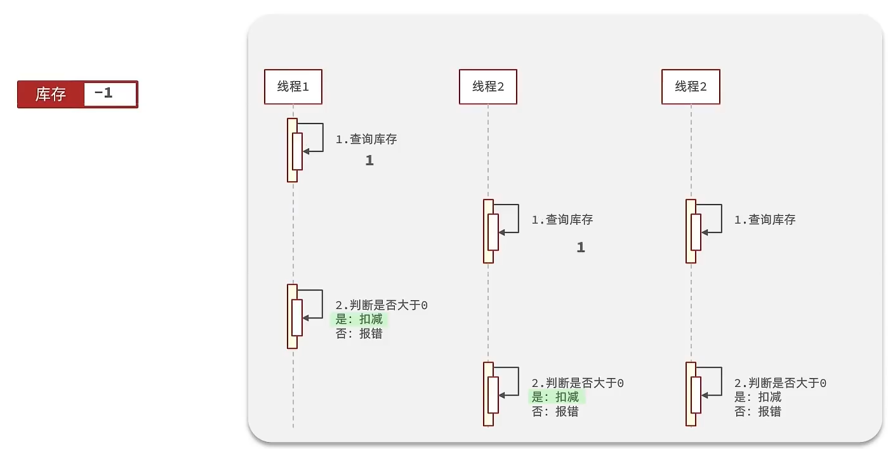
超卖问题是典型的多线程安全问题，针对这一问题的常见解决方案就是加锁：而对于加锁，我们通常有两种解决方案：见下图：
[原笔记图片附件缺失：.\Redis实战篇.assets\1653368562591.png]
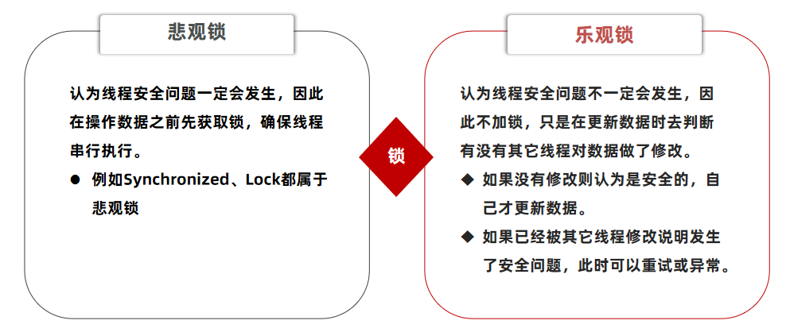
悲观锁：就是正常加锁, 逻辑同步 或者 是直接取锁调库 ;
悲观锁可以实现对于数据的串行化执行，比如syn，和lock都是悲观锁的代表，同时，悲观锁中又可以再细分为公平锁，非公平锁，可重入锁，等等
乐观锁：
乐观锁：会有一个版本号，每次操作数据会对版本号+1，再提交回数据时，会去校验是否比之前的版本大1 ，如果大1 ，则进行操作成功，这套机制的核心逻辑在于，如果在操作过程中，版本号只比原来大1 ，那么就意味着操作过程中没有人对他进行过修改，他的操作就是安全的，如果不大1，则数据被修改过，当然乐观锁还有一些变种的处理方式比如．ＣＡＳ，使用版本号实现对原本数据控制 不如直接使用被修改数据本身实现定位－－＞ＣＡＳ
乐观锁的典型代表：就是cas，利用cas进行无锁化机制加锁，var5 是操作前读取的内存值，while中的var1+var2 是预估值，如果预估值 == 内存值，则代表中间没有被人修改过，此时就将新值去替换 内存值
其中do while 是为了在操作失败时，再次进行自旋操作，即把之前的逻辑再操作一次。
int var5;
do {
var5 = this.getIntVolatile(var1, var2);
} while(!this.compareAndSwapInt(var1, var2, var5, var5 + var4));
return var5;
课程中的使用方式：
课程中的使用方式是没有像cas一样带自旋的操作，也没有对version的版本号+1 ，他的操作逻辑是在操作时，对版本号进行+1 操作，然后要求version 如果是1 的情况下，才能操作，那么第一个线程在操作后，数据库中的version变成了2，但是他自己满足version=1 ，所以没有问题，此时线程2执行，线程2 最后也需要加上条件version =1 ，但是现在由于线程1已经操作过了，所以线程2，操作时就不满足version=1 的条件了，所以线程2无法执行成功
[原笔记图片附件缺失：.\Redis实战篇.assets\1653369268550.png]
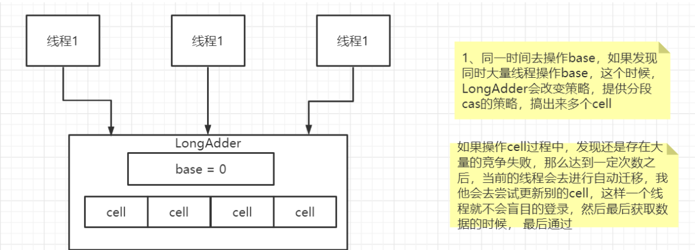
3.6 乐观锁解决超卖问题
修改代码方案一、 CAS 方案
VoucherOrderServiceImpl 在扣减库存时，改为：
可以防止查询和修改 操作过程中 高并发 别的线程会 同时查询 导致 超卖问题 ;
boolean success = seckillVoucherService.update()
.setSql("stock= stock -1") //set stock = stock -1
.eq("voucher_id", voucherId).eq("stock",voucher.getStock()).update(); //where id = ？ and stock = ?
以上逻辑的核心含义是：只要我扣减库存时的库存和之前我查询到的库存是一样的，就意味着没有人在中间修改过库存，那么此时就是安全的，但是以上这种方式通过测试发现会有很多失败的情况，失败的原因在于：在使用乐观锁过程中假设100个线程同时都拿到了100的库存，然后大家一起去进行扣减，但是100个人中只有1个人能扣减成功，其他的人在处理时，他们在扣减时，库存已经被修改过了，所以此时其他线程都会失败
修改代码方案二、
之前的方式要修改前后都保持一致，但是这样我们分析过，成功的概率太低，所以我们的乐观锁需要变一下，改成stock大于0 即可 , eq , et 都是 mybatis-plus实现的 , 使用严格的和查询时数量相等反而会导致失败大大增强;
boolean success = seckillVoucherService.update()
.setSql("stock= stock -1")
.eq("voucher_id", voucherId).update().gt("stock",0); //where id = ? and stock > 0
知识小扩展：
针对 CAS 中的自旋压力过大，我们可以使用Longaddr这个类去解决
Java8 提供的一个对AtomicLong改进后的一个类，LongAdder
大量线程并发更新一个原子性的时候，天然的问题就是自旋，会导致并发性问题，当然这也比我们直接使用 syn 来的好
所以利用这么一个类，LongAdder来进行优化
如果获取某个值，则会对cell和base的值进行递增，最后返回一个完整的值
但这并不算乐观锁 , 面对后面对 是否付款状态查询的时候 一定要使用 version 实现状态修改 ;
3.6 优惠券秒杀-一人一单
需求：修改秒杀业务，要求同一个优惠券，一个用户只能下一单
现在的问题在于：
优惠卷是为了引流，但是目前的情况是，一个人可以无限制的抢这个优惠卷，所以我们应当增加一层逻辑，让一个用户只能下一个单，而不是让一个用户下多个单
具体操作逻辑如下：比如时间是否充足，如果时间充足，则进一步判断库存是否足够，然后再根据优惠卷id和用户id查询是否已经下过这个订单，如果下过这个订单，则不再下单，否则进行下单
[原笔记图片附件缺失：.\Redis实战篇.assets\1653371854389.png] 
VoucherOrderServiceImpl
初步代码：增加一人一单逻辑
@Override
public Result seckillVoucher(Long voucherId) {
// 1.查询优惠券
SeckillVoucher voucher = seckillVoucherService.getById(voucherId);
// 2.判断秒杀是否开始
if (voucher.getBeginTime().isAfter(LocalDateTime.now())) {
// 尚未开始
return Result.fail("秒杀尚未开始！");
}
// 3.判断秒杀是否已经结束
if (voucher.getEndTime().isBefore(LocalDateTime.now())) {
// 尚未开始
return Result.fail("秒杀已经结束！");
}
// 4.判断库存是否充足
if (voucher.getStock() < 1) {
// 库存不足
return Result.fail("库存不足！");
}
// 5.一人一单逻辑
// 5.1.用户id
Long userId = UserHolder.getUser().getId();
int count = query().eq("user_id", userId).eq("voucher_id", voucherId).count();
// 5.2.判断是否存在
if (count > 0) {
// 用户已经购买过了
return Result.fail("用户已经购买过一次！");
}
//6，扣减库存
boolean success = seckillVoucherService.update()
.setSql("stock= stock -1")
.eq("voucher_id", voucherId).update();
if (!success) {
//扣减库存
return Result.fail("库存不足！");
}
//7.创建订单
VoucherOrder voucherOrder = new VoucherOrder();
// 7.1.订单id
long orderId = redisIdWorker.nextId("order");
voucherOrder.setId(orderId);
voucherOrder.setUserId(userId);
// 7.3.代金券id
voucherOrder.setVoucherId(voucherId);
save(voucherOrder);
return Result.ok(orderId);
}
**存在问题：**现在的问题还是和之前一样，并发过来，查询数据库，都不存在订单，所以我们还是需要加锁，但是乐观锁比较适合更新数据，而现在是插入数据，所以我们需要使用悲观锁操作
**注意：**在这里提到了非常多的问题，我们需要慢慢的来思考，首先我们的初始方案是封装了一个createVoucherOrder方法，同时为了确保他线程安全，在方法上添加了一把synchronized 锁
@Transactional
public synchronized Result createVoucherOrder(Long voucherId) {
Long userId = UserHolder.getUser().getId();
// 5.1.查询订单
int count = query().eq("user_id", userId).eq("voucher_id", voucherId).count();
// 5.2.判断是否存在
if (count > 0) {
// 用户已经购买过了
return Result.fail("用户已经购买过一次！");
}
// 6.扣减库存
boolean success = seckillVoucherService.update()
.setSql("stock = stock - 1") // set stock = stock - 1
.eq("voucher_id", voucherId).gt("stock", 0) // where id = ? and stock > 0
.update();
if (!success) {
// 扣减失败
return Result.fail("库存不足！");
}
// 7.创建订单
VoucherOrder voucherOrder = new VoucherOrder();
// 7.1.订单id
long orderId = redisIdWorker.nextId("order");
voucherOrder.setId(orderId);
// 7.2.用户id
voucherOrder.setUserId(userId);
// 7.3.代金券id
voucherOrder.setVoucherId(voucherId);
save(voucherOrder);
// 7.返回订单id
return Result.ok(orderId);
}
，但是这样添加锁，锁的粒度太粗了，在使用锁过程中，控制锁粒度 是一个非常重要的事情，因为如果锁的粒度太大，会导致每个线程进来都会锁住，所以我们需要去控制锁的粒度，以下这段代码需要修改为：
intern() 这个方法是从常量池中拿到数据，如果我们直接使用userId.toString() 他拿到的对象实际上是不同的对象，new出来的对象，我们使用锁必须保证锁必须是同一把，所以我们需要使用intern()方法
@Transactional
public Result createVoucherOrder(Long voucherId) {
Long userId = UserHolder.getUser().getId();
synchronized(userId.toString().intern()){
// 5.1.查询订单
int count = query().eq("user_id", userId).eq("voucher_id", voucherId).count();
// 5.2.判断是否存在
if (count > 0) {
// 用户已经购买过了
return Result.fail("用户已经购买过一次！");
}
// 6.扣减库存
boolean success = seckillVoucherService.update()
.setSql("stock = stock - 1") // set stock = stock - 1
.eq("voucher_id", voucherId).gt("stock", 0) // where id = ? and stock > 0
.update();
if (!success) {
// 扣减失败
return Result.fail("库存不足！");
}
// 7.创建订单
VoucherOrder voucherOrder = new VoucherOrder();
// 7.1.订单id
long orderId = redisIdWorker.nextId("order");
voucherOrder.setId(orderId);
// 7.2.用户id
voucherOrder.setUserId(userId);
// 7.3.代金券id
voucherOrder.setVoucherId(voucherId);
save(voucherOrder);
// 7.返回订单id
return Result.ok(orderId);
}
}
但是以上代码还是存在问题，问题的原因在于当前方法被spring的事务控制，如果你在方法内部加锁，可能会导致当前方法事务还没有提交，但是锁已经释放也会导致问题，所以我们选择将当前方法整体包裹起来，确保事务不会出现问题：如下：
在seckillVoucher 方法中，添加以下逻辑，这样就能保证事务的特性，同时也控制了锁的粒度
[原笔记图片附件缺失：.\Redis实战篇.assets\1653373434815.png]
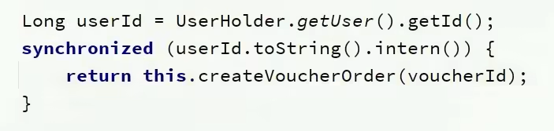
但是以上做法依然有问题，因为你调用的方法，其实是this.的方式调用的，事务想要生效，还得利用代理来生效，所以这个地方，我们需要获得原始的事务对象， 来操作事务
[原笔记图片附件缺失：.\Redis实战篇.assets\1653383810643.png]
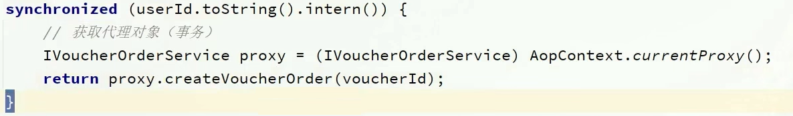
3.7 集群环境下的并发问题
通过加锁可以解决在单机情况下的一人一单安全问题，但是在集群模式下就不行了。
1、我们将服务启动两份，端口分别为8081和8082：
[原笔记图片附件缺失：.\Redis实战篇.assets\1653373887844.png]
2、然后修改nginx的conf目录下的nginx.conf文件，配置反向代理和负载均衡：
[原笔记图片附件缺失：.\Redis实战篇.assets\1653373908620.png]
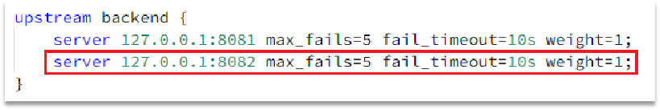
具体操作(略)
有关锁失效原因分析
由于现在我们部署了多个tomcat，每个tomcat都有一个属于自己的jvm，那么假设在服务器A的tomcat内部，有两个线程，这两个线程由于使用的是同一份代码，那么他们的锁对象是同一个，是可以实现互斥的，但是如果现在是服务器B的tomcat内部，又有两个线程，但是他们的锁对象写的虽然和服务器A一样，但是锁对象却不是同一个，所以线程3和线程4可以实现互斥，但是却无法和线程1和线程2实现互斥，这就是 集群环境下，syn锁失效的原因，在这种情况下，我们就需要使用分布式锁来解决这个问题。
[原笔记图片附件缺失：.\Redis实战篇.assets\1653374044740.png]
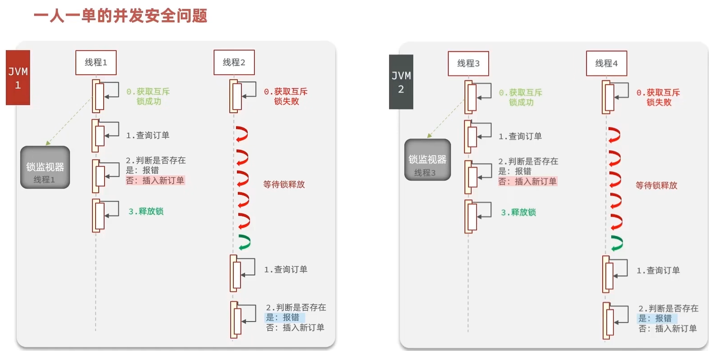
4、分布式锁
4.1 、基本原理和实现方式对比
分布式锁：满足分布式系统或集群模式下多进程可见并且互斥的锁。
分布式锁的核心思想
就是让大家都使用同一把锁，只要大家使用的是同一把锁，那么我们就能锁住线程，不让线程进行，让程序串行执行，这就是分布式锁的核心思路
[原笔记图片附件缺失：.\Redis实战篇.assets\1653374296906.png]
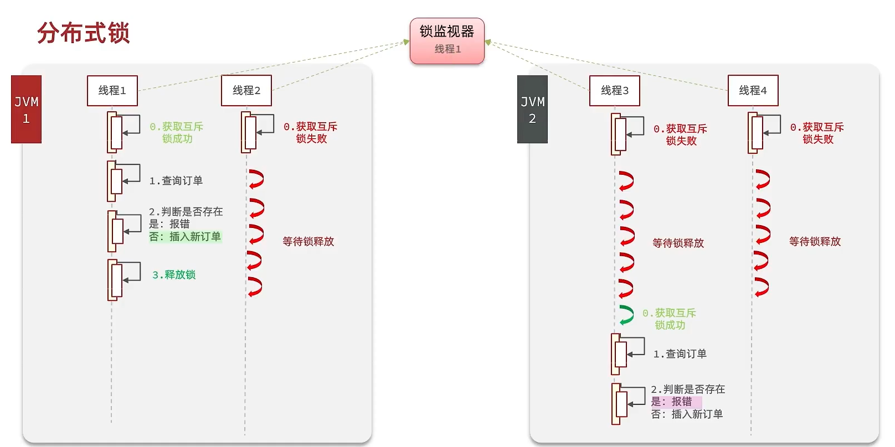
那么分布式锁他应该满足一些什么样的条件呢？
可见性：多个线程都能看到相同的结果，注意：这个地方说的可见性并不是并发编程中指的内存可见性，只是说多个进程之间都能感知到变化的意思
互斥：互斥是分布式锁的最基本的条件，使得程序串行执行
高可用：程序不易崩溃，时时刻 刻都保证较高的可用性
高性能：由于加锁本身就让性能降低，所有对于分布式锁本身需要他就较高的加锁性能和释放锁性能
安全性：安全也是程序中必不可少的一环
[原笔记图片附件缺失：.\Redis实战篇.assets\1653381992018.png] 
常见的分布式锁有三种
Mysql：mysql本身就带有锁机制，但是由于mysql性能本身一般，所以采用分布式锁的情况下，其实使用mysql作为分布式锁比较少见
Redis：redis作为分布式锁是非常常见的一种使用方式，现在企业级开发中基本都使用redis或者zookeeper作为分布式锁，利用setnx这个方法，如果插入key成功，则表示获得到了锁，如果有人插入成功，其他人插入失败则表示无法获得到锁，利用这套逻辑来实现分布式锁
Zookeeper：zookeeper也是企业级开发中较好的一个实现分布式锁的方案，由于本套视频并不讲解zookeeper的原理和分布式锁的实现，所以不过多阐述
[原笔记图片附件缺失：.\Redis实战篇.assets\1653382219377.png]
4.2 、Redis分布式锁的实现核心思路
实现分布式锁时需要实现的两个基本方法：
获取锁：
互斥：确保只能有一个线程获取锁
非阻塞：尝试一次，成功返回true，失败返回false
存在互斥特性
使用 SET 创建一个 具有 原子性 的锁 : 创建一个 EX 限制时长的 锁 , 然后 使用 NX 实现互斥锁;
SETNX lock thread1 --> 设置一个线程锁
释放锁：
手动释放
超时释放：获取锁时添加一个超时时间 . 防止宕机后系统直接废掉
核心思路：
我们利用redis 的setNx 方法，当有多个线程进入时，我们就利用该方法，第一个线程进入时，redis 中就有这个key 了，返回了1，如果结果是1，则表示他抢到了锁，那么他去执行业务，然后再删除锁，退出锁逻辑，没有抢到锁的哥们，等待一定时间后重试即可
4.3 实现分布式锁版本一
基于 redis 实现 分布式锁
- 加锁逻辑
锁的基本接口
[原笔记图片附件缺失：.\Redis实战篇.assets\1656079017728.png]
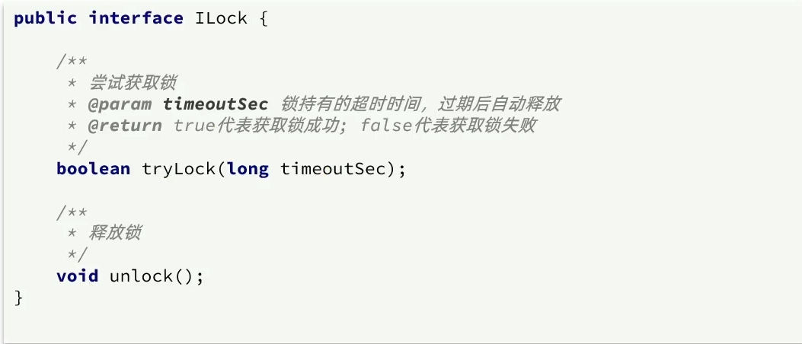
SimpleRedisLock
利用setnx方法进行加锁，同时增加过期时间，防止死锁，此方法可以保证加锁和增加过期时间具有原子性
private static final String KEY_PREFIX="lock:"
@Override
public boolean tryLock(long timeoutSec) {
// 获取线程标示
String threadId = Thread.currentThread().getId()
// 获取锁
Boolean success = stringRedisTemplate.opsForValue()
.setIfAbsent(KEY_PREFIX + name, threadId + "", timeoutSec, TimeUnit.SECONDS);
return Boolean.TRUE.equals(success);
}
- 释放锁逻辑
SimpleRedisLock
释放锁，防止删除别人的锁
public void unlock() {
//通过del删除锁
stringRedisTemplate.delete(KEY_PREFIX + name);
}
- 修改业务代码
@Override
public Result seckillVoucher(Long voucherId) {
// 1.查询优惠券
SeckillVoucher voucher = seckillVoucherService.getById(voucherId);
// 2.判断秒杀是否开始
if (voucher.getBeginTime().isAfter(LocalDateTime.now())) {
// 尚未开始
return Result.fail("秒杀尚未开始！");
}
// 3.判断秒杀是否已经结束
if (voucher.getEndTime().isBefore(LocalDateTime.now())) {
// 尚未开始
return Result.fail("秒杀已经结束！");
}
// 4.判断库存是否充足
if (voucher.getStock() < 1) {
// 库存不足
return Result.fail("库存不足！");
}
Long userId = UserHolder.getUser().getId();
//创建锁对象(新增代码)
SimpleRedisLock lock = new SimpleRedisLock("order:" + userId, stringRedisTemplate);
//获取锁对象
boolean isLock = lock.tryLock(1200);
//加锁失败
if (!isLock) {
return Result.fail("不允许重复下单");
}
try {
//获取代理对象(事务)
IVoucherOrderService proxy = (IVoucherOrderService) AopContext.currentProxy();
return proxy.createVoucherOrder(voucherId);
} finally {
//释放锁
lock.unlock();
}
}
4.4 Redis分布式锁误删情况说明
逻辑说明：
持有锁的线程在锁的内部出现了阻塞，导致他的锁自动释放，这时其他线程，线程2来尝试获得锁，就拿到了这把锁，然后线程2在持有锁执行过程中，线程1反应过来，继续执行，而线程1执行过程中，走到了删除锁逻辑，此时就会把本应该属于线程2的锁进行删除，这就是误删别人锁的情况说明
解决方案：解决方案就是在每个线程释放锁的时候，去判断一下当前这把锁是否属于自己，如果属于自己，则不进行锁的删除，假设还是上边的情况，线程1卡顿，锁自动释放，线程2进入到锁的内部执行逻辑，此时线程1反应过来，然后删除锁，但是线程1，一看当前这把锁不是属于自己，于是不进行删除锁逻辑，当线程2走到删除锁逻辑时，如果没有卡过自动释放锁的时间点，则判断当前这把锁是属于自己的，于是删除这把锁。

4.5 解决Redis分布式锁误删问题
需求：修改之前的分布式锁实现，满足：在获取锁时存入线程标示（可以用UUID表示）
在释放锁时先获取锁中的线程标示，判断是否与当前线程标示一致
- 如果一致则释放锁
- 如果不一致则不释放锁
核心逻辑：在存入锁时，放入自己线程的标识，在删除锁时，判断当前这把锁的标识是不是自己存入的，如果是，则进行删除，如果不是，则不进行删除。
[原笔记图片附件缺失：.\Redis实战篇.assets\1653387398820.png]
具体代码如下：加锁
private static final String ID_PREFIX = UUID.randomUUID().toString(true) + "-";
@Override
public boolean tryLock(long timeoutSec) {
// 获取线程标示
String threadId = ID_PREFIX + Thread.currentThread().getId();
// 获取锁
Boolean success = stringRedisTemplate.opsForValue()
.setIfAbsent(KEY_PREFIX + name, threadId, timeoutSec, TimeUnit.SECONDS);
return Boolean.TRUE.equals(success);
}
释放锁
public void unlock() {
// 获取线程标示
String threadId = ID_PREFIX + Thread.currentThread().getId();
// 获取锁中的标示
String id = stringRedisTemplate.opsForValue().get(KEY_PREFIX + name);
// 判断标示是否一致
if(threadId.equals(id)) {
// 释放锁
stringRedisTemplate.delete(KEY_PREFIX + name);
}
}
有关代码实操说明：
在我们修改完此处代码后，我们重启工程，然后启动两个线程，第一个线程持有锁后，手动释放锁，第二个线程 此时进入到锁内部，再放行第一个线程，此时第一个线程由于锁的value值并非是自己，所以不能释放锁，也就无法删除别人的锁，此时第二个线程能够正确释放锁，通过这个案例初步说明我们解决了锁误删的问题。
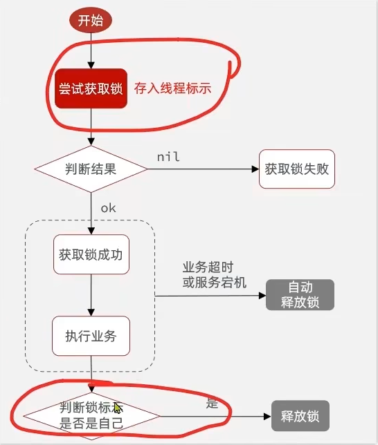
4.6 分布式锁的原子性问题
更为极端的误删逻辑说明：
线程1现在持有锁之后，在执行业务逻辑过程中，他正准备删除锁，而且已经走到了条件判断的过程中，比如他已经拿到了当前这把锁确实是属于他自己的，正准备删除锁，但是此时他的锁到期了，那么此时线程2进来，但是线程1他会接着往后执行，当他卡顿结束后，他直接就会执行删除锁那行代码，相当于条件判断并没有起到作用，这就是删锁时的原子性问题，之所以有这个问题，是因为线程1的拿锁，比锁，删锁，实际上并不是原子性的，我们要防止刚才的情况发生，
[原笔记图片附件缺失：.\Redis实战篇.assets\1653387764938.png] 
4.7 Lua脚本解决多条命令原子性问题
Redis提供了Lua脚本功能，在一个脚本中编写多条Redis命令，确保多条命令执行时的原子性。Lua是一种编程语言，它的基本语法大家可以参考网站：https://www.runoob.com/lua/lua-tutorial.html，这里重点介绍Redis提供的调用函数，我们可以使用lua去操作redis，又能保证他的原子性，这样就可以实现拿锁比锁删锁是一个原子性动作了，作为Java程序员这一块并不作一个简单要求，并不需要大家过于精通，只需要知道他有什么作用即可。
这里重点介绍Redis提供的调用函数，语法如下：
redis.call('命令名称', 'key', '其它参数', ...)
例如，我们要执行set name jack，则脚本是这样：
# 执行 set name jack
redis.call('set', 'name', 'jack')
例如，我们要先执行set name Rose，再执行get name，则脚本如下：
# 先执行 set name jack
redis.call('set', 'name', 'Rose')
# 再执行 get name
local name = redis.call('get', 'name')
# 返回
return name
写好脚本以后，需要用Redis命令来调用脚本，调用脚本的常见命令如下：
[原笔记图片附件缺失：.\Redis实战篇.assets\1653392181413.png]
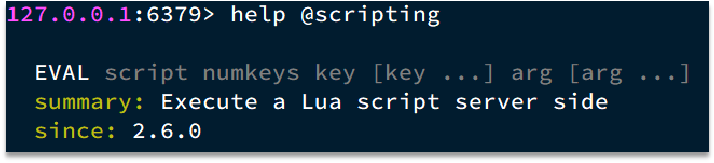
例如，我们要执行 redis.call('set', 'name', 'jack') 这个脚本，语法如下：
[原笔记图片附件缺失：.\Redis实战篇.assets\1653392218531.png]
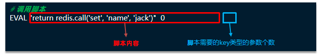
如果脚本中的key、value不想写死，可以作为参数传递。key类型参数会放入KEYS数组，其它参数会放入ARGV数组，在脚本中可以从KEYS和ARGV数组获取这些参数：
内部存储的是键值对 : 然后传数字 : 内部放入的是 KEY[num] , AGRV[num] ) num , 传入的key , 传入的 value ;
接下来我们来回一下我们释放锁的逻辑：
释放锁的业务流程是这样的
1、获取锁中的线程标示
2、判断是否与指定的标示（当前线程标示）一致
3、如果一致则释放锁（删除）
4、如果不一致则什么都不做
如果用Lua脚本来表示则是这样的：
最终我们操作redis的拿锁比锁删锁的lua脚本就会变成这样
-- 这里的 KEYS[1] 就是锁的key，这里的ARGV[1] 就是当前线程标示
-- 获取锁中的标示，判断是否与当前线程标示一致
if (redis.call('GET', KEYS[1]) == ARGV[1]) then
-- 一致，则删除锁
return redis.call('DEL', KEYS[1])
end
-- 不一致，则直接返回
return 0
4.8 利用Java代码调用Lua脚本改造分布式锁
lua脚本本身并不需要大家花费太多时间去研究，只需要知道如何调用，大致是什么意思即可，所以在笔记中并不会详细的去解释这些lua表达式的含义。
我们的RedisTemplate中，可以利用execute方法去执行lua脚本，参数对应关系就如下图股
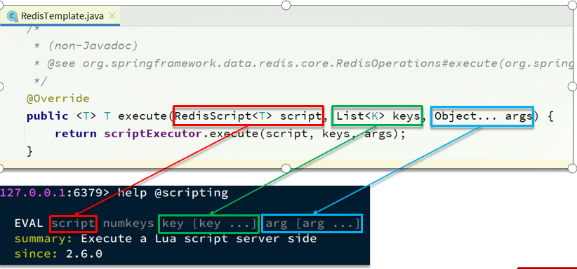
[原笔记图片附件缺失：.\Redis实战篇.assets\1653393304844.png]
Java代码
private static final DefaultRedisScript<Long> UNLOCK_SCRIPT;
static {
UNLOCK_SCRIPT = new DefaultRedisScript<>();
UNLOCK_SCRIPT.setLocation(new ClassPathResource("unlock.lua"));
UNLOCK_SCRIPT.setResultType(Long.class);
}
public void unlock() {
// 调用lua脚本
stringRedisTemplate.execute(
UNLOCK_SCRIPT,
Collections.singletonList(KEY_PREFIX + name),
ID_PREFIX + Thread.currentThread().getId());
}
经过以上代码改造后，我们就能够实现 拿锁比锁删锁的原子性动作了~
小总结：
基于Redis的分布式锁实现思路：
利用set nx ex获取锁，并设置过期时间，保存线程标示
释放锁时先判断线程标示是否与自己一致，一致则删除锁
特性：
利用set nx满足互斥性
利用set ex保证故障时锁依然能释放，避免死锁，提高安全性
利用Redis集群保证高可用和高并发特性
笔者总结：我们一路走来，利用添加过期时间，防止死锁问题的发生，但是有了过期时间之后，可能出现误删别人锁的问题，这个问题我们开始是利用删之前 通过拿锁，比锁，删锁这个逻辑来解决的，也就是删之前判断一下当前这把锁是否是属于自己的，但是现在还有原子性问题，也就是我们没法保证拿锁比锁删锁是一个原子性的动作，最后通过lua表达式来解决这个问题
但是目前还剩下一个问题锁不住，什么是锁不住呢，你想一想，如果当过期时间到了之后，我们可以给他续期一下，比如续个30s，就好像是网吧上网， 网费到了之后，然后说，来，网管，再给我来10块的，是不是后边的问题都不会发生了，那么续期问题怎么解决呢，可以依赖于我们接下来要学习redission啦
测试逻辑：
第一个线程进来，得到了锁，手动删除锁，模拟锁超时了，其他线程会执行lua来抢锁，当第一天线程利用lua删除锁时，lua能保证他不能删除他的锁，第二个线程删除锁时，利用lua同样可以保证不会删除别人的锁，同时还能保证原子性。
5、分布式锁-redission
5.1 分布式锁-redission功能介绍
基于setnx实现的分布式锁存在下面的问题：
重入问题：重入问题是指 获得锁的线程可以再次进入到相同的锁的代码块中，可重入锁的意义在于防止死锁，比如HashTable这样的代码中，他的方法都是使用synchronized修饰的，假如他在一个方法内，调用另一个方法，那么此时如果是不可重入的，不就死锁了吗？所以可重入锁他的主要意义是防止死锁，我们的synchronized和Lock锁都是可重入的。
不可重试：是指目前的分布式只能尝试一次，我们认为合理的情况是：当线程在获得锁失败后，他应该能再次尝试获得锁。
**超时释放：**我们在加锁时增加了过期时间，这样的我们可以防止死锁，但是如果卡顿的时间超长，虽然我们采用了lua表达式防止删锁的时候，误删别人的锁，但是毕竟没有锁住，有安全隐患
主从一致性： 如果Redis提供了主从集群，当我们向集群写数据时，主机需要异步的将数据同步给从机，而万一在同步过去之前，主机宕机了，就会出现死锁问题。
[原笔记图片附件缺失：.\Redis实战篇.assets\1653546070602.png]
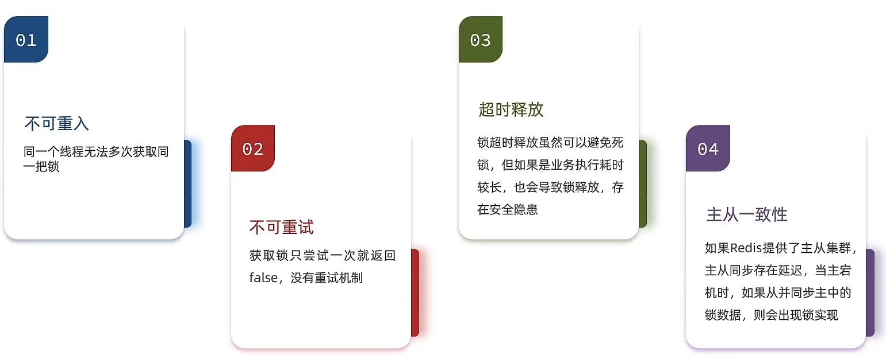
那么什么是Redission呢
Redisson是一个在Redis的基础上实现的Java驻内存数据网格（In-Memory Data Grid）。它不仅提供了一系列的分布式的Java常用对象，还提供了许多分布式服务，其中就包含了各种分布式锁的实现。
Redission提供了分布式锁的多种多样的功能
[原笔记图片附件缺失：.\Redis实战篇.assets\1653546736063.png]
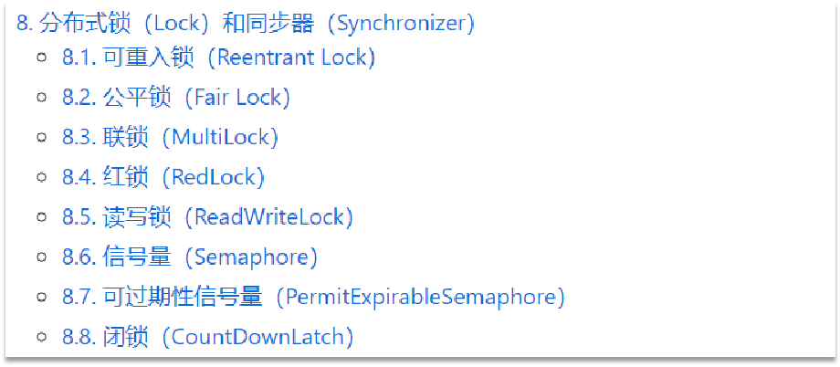
5.2 分布式锁-Redission快速入门
引入依赖：
<dependency>
<groupId>org.redisson</groupId>
<artifactId>redisson</artifactId>
<version>3.13.6</version>
</dependency>
配置Redisson客户端：
@Configuration
public class RedissonConfig {
@Bean
public RedissonClient redissonClient(){
// 配置
Config config = new Config();
config.useSingleServer().setAddress("redis://192.168.150.101:6379")
.setPassword("123321");
// 创建RedissonClient对象
return Redisson.create(config);
}
}
如何使用Redission的分布式锁
@Resource
private RedissionClient redissonClient;
@Test
void testRedisson() throws Exception{
//获取锁(可重入)，指定锁的名称
RLock lock = redissonClient.getLock("anyLock");
//尝试获取锁，参数分别是：获取锁的最大等待时间(期间会重试)，锁自动释放时间，时间单位
boolean isLock = lock.tryLock(1,10,TimeUnit.SECONDS);
//判断获取锁成功
if(isLock){
try{
System.out.println("执行业务");
}finally{
//释放锁
lock.unlock();
}
}
}
在 VoucherOrderServiceImpl
注入RedissonClient
@Resource
private RedissonClient redissonClient;
@Override
public Result seckillVoucher(Long voucherId) {
// 1.查询优惠券
SeckillVoucher voucher = seckillVoucherService.getById(voucherId);
// 2.判断秒杀是否开始
if (voucher.getBeginTime().isAfter(LocalDateTime.now())) {
// 尚未开始
return Result.fail("秒杀尚未开始！");
}
// 3.判断秒杀是否已经结束
if (voucher.getEndTime().isBefore(LocalDateTime.now())) {
// 尚未开始
return Result.fail("秒杀已经结束！");
}
// 4.判断库存是否充足
if (voucher.getStock() < 1) {
// 库存不足
return Result.fail("库存不足！");
}
Long userId = UserHolder.getUser().getId();
//创建锁对象 这个代码不用了，因为我们现在要使用分布式锁
//SimpleRedisLock lock = new SimpleRedisLock("order:" + userId, stringRedisTemplate);
RLock lock = redissonClient.getLock("lock:order:" + userId);
//获取锁对象
boolean isLock = lock.tryLock();
//加锁失败
if (!isLock) {
return Result.fail("不允许重复下单");
}
try {
//获取代理对象(事务)
IVoucherOrderService proxy = (IVoucherOrderService) AopContext.currentProxy();
return proxy.createVoucherOrder(voucherId);
} finally {
//释放锁
lock.unlock();
}
}
5.3 分布式锁-redission可重入锁原理
前后操作的是一把锁, 重入会刷新锁的时长 + (重入数 + 1 ) , 然后使用 unlock() . 状态数大于0 , 不删只刷新时长 ;
看门狗 会在使用 1/3 时间后 自动续费这块 ;
在Lock锁中，他是借助于底层的一个voaltile的一个state变量来记录重入的状态的，比如当前没有人持有这把锁，那么state=0，假如有人持有这把锁，
那么state=1，如果持有这把锁的人再次持有这把锁，那么state就会+1 ，
如果是对于synchronized而言，他在c语言代码中会有一个count，原理和state类似，也是重入一次就加一，释放一次就-1 ，直到减少成0 时，表示当前这把锁没有被人持有。
在redission中，我们的也支持支持可重入锁
在分布式锁中，他采用hash结构用来存储锁，其中大key表示表示这把锁是否存在，用小key表示当前这把锁被哪个线程持有，所以接下来我们一起分析一下当前的这个lua表达式
这个地方一共有3个参数
KEYS[1] ： 锁名称
ARGV[1]： 锁失效时间
ARGV[2]： id + ":" + threadId; 锁的小key
exists: 判断数据是否存在 name：是lock是否存在,如果==0，就表示当前这把锁不存在
redis.call('hset', KEYS[1], ARGV[2], 1);此时他就开始往redis里边去写数据 ，写成一个hash结构
Lock{
id + ":" + threadId : 1
}
如果当前这把锁存在，则第一个条件不满足，再判断
redis.call('hexists', KEYS[1], ARGV[2]) == 1
此时需要通过大key+小key判断当前这把锁是否是属于自己的，如果是自己的，则进行
redis.call('hincrby', KEYS[1], ARGV[2], 1)
将当前这个锁的value进行+1 ，redis.call('pexpire', KEYS[1], ARGV[1]); 然后再对其设置过期时间，如果以上两个条件都不满足，则表示当前这把锁抢锁失败，最后返回pttl，即为当前这把锁的失效时间
如果小伙帮们看了前边的源码， 你会发现他会去判断当前这个方法的返回值是否为null，如果是null，则对应则前两个if对应的条件，退出抢锁逻辑，如果返回的不是null，即走了第三个分支，在源码处会进行while(true)的自旋抢锁。
"if (redis.call('exists', KEYS[1]) == 0) then " +
"redis.call('hset', KEYS[1], ARGV[2], 1); " +
"redis.call('pexpire', KEYS[1], ARGV[1]); " +
"return nil; " +
"end; " +
"if (redis.call('hexists', KEYS[1], ARGV[2]) == 1) then " +
"redis.call('hincrby', KEYS[1], ARGV[2], 1); " +
"redis.call('pexpire', KEYS[1], ARGV[1]); " +
"return nil; " +
"end; " +
"return redis.call('pttl', KEYS[1]);"
[原笔记图片附件缺失：.\Redis实战篇.assets\1653548087334.png]
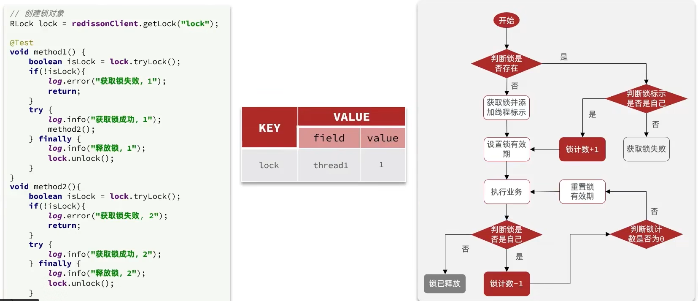
5.4 分布式锁-redission锁重试和WatchDog机制
说明：由于课程中已经说明了有关tryLock的源码解析以及其看门狗原理，所以笔者在这里给大家分析lock()方法的源码解析，希望大家在学习过程中，能够掌握更多的知识
抢锁过程中，获得当前线程，通过tryAcquire进行抢锁，该抢锁逻辑和之前逻辑相同
1、先判断当前这把锁是否存在，如果不存在，插入一把锁，返回null
2、判断当前这把锁是否是属于当前线程，如果是，则返回null
所以如果返回是null，则代表着当前这哥们已经抢锁完毕，或者可重入完毕，但是如果以上两个条件都不满足，则进入到第三个条件，返回的是锁的失效时间，同学们可以自行往下翻一点点，你能发现有个while( true) 再次进行tryAcquire进行抢锁
long threadId = Thread.currentThread().getId();
Long ttl = tryAcquire(-1, leaseTime, unit, threadId);
// lock acquired
if (ttl == null) {
return;
}
接下来会有一个条件分支，因为lock方法有重载方法，一个是带参数，一个是不带参数，如果带带参数传入的值是-1，如果传入参数，则leaseTime是他本身，所以如果传入了参数，此时leaseTime != -1 则会进去抢锁，抢锁的逻辑就是之前说的那三个逻辑
if (leaseTime != -1) {
return tryLockInnerAsync(waitTime, leaseTime, unit, threadId, RedisCommands.EVAL_LONG);
}
如果是没有传入时间，则此时也会进行抢锁， 而且抢锁时间是默认看门狗时间 commandExecutor.getConnectionManager().getCfg().getLockWatchdogTimeout()
ttlRemainingFuture.onComplete((ttlRemaining, e) 这句话相当于对以上抢锁进行了监听，也就是说当上边抢锁完毕后，此方法会被调用，具体调用的逻辑就是去后台开启一个线程，进行续约逻辑，也就是看门狗线程
RFuture<Long> ttlRemainingFuture = tryLockInnerAsync(waitTime,
commandExecutor.getConnectionManager().getCfg().getLockWatchdogTimeout(),
TimeUnit.MILLISECONDS, threadId, RedisCommands.EVAL_LONG);
ttlRemainingFuture.onComplete((ttlRemaining, e) -> {
if (e != null) {
return;
}
// lock acquired
if (ttlRemaining == null) {
scheduleExpirationRenewal(threadId);
}
});
return ttlRemainingFuture;
此逻辑就是续约逻辑，注意看commandExecutor.getConnectionManager().newTimeout（） 此方法
Method( new TimerTask() {},参数2 ，参数3 )
指的是：通过参数2，参数3 去描述什么时候去做参数1的事情，现在的情况是：10s之后去做参数一的事情
因为锁的失效时间是30s，当10s之后，此时这个timeTask 就触发了，他就去进行续约，把当前这把锁续约成30s，如果操作成功，那么此时就会递归调用自己，再重新设置一个timeTask()，于是再过10s后又再设置一个timerTask，完成不停的续约
那么大家可以想一想，假设我们的线程出现了宕机他还会续约吗？当然不会，因为没有人再去调用renewExpiration这个方法，所以等到时间之后自然就释放了。
private void renewExpiration() {
ExpirationEntry ee = EXPIRATION_RENEWAL_MAP.get(getEntryName());
if (ee == null) {
return;
}
Timeout task = commandExecutor.getConnectionManager().newTimeout(new TimerTask() {
@Override
public void run(Timeout timeout) throws Exception {
ExpirationEntry ent = EXPIRATION_RENEWAL_MAP.get(getEntryName());
if (ent == null) {
return;
}
Long threadId = ent.getFirstThreadId();
if (threadId == null) {
return;
}
RFuture<Boolean> future = renewExpirationAsync(threadId);
future.onComplete((res, e) -> {
if (e != null) {
log.error("Can't update lock " + getName() + " expiration", e);
return;
}
if (res) {
// reschedule itself
renewExpiration();
}
});
}
}, internalLockLeaseTime / 3, TimeUnit.MILLISECONDS);
ee.setTimeout(task);
}
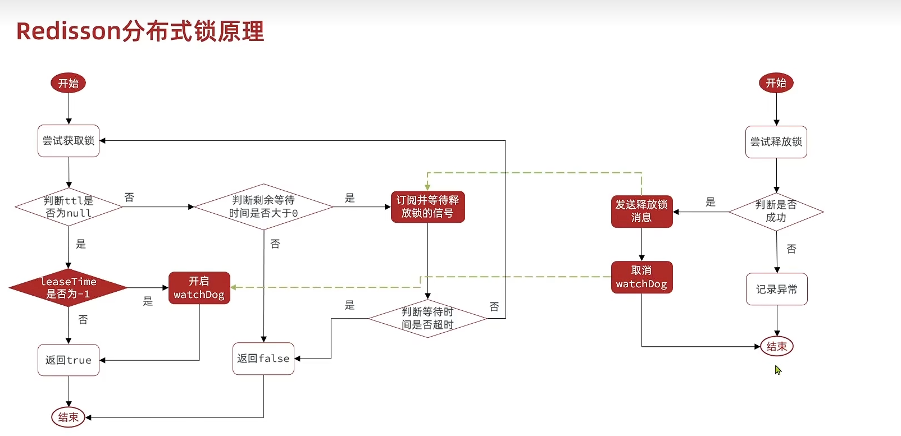
使用 redisson 解决之前面对的 多个问题 :
一旦获取锁 就会自动开启看门狗的设置
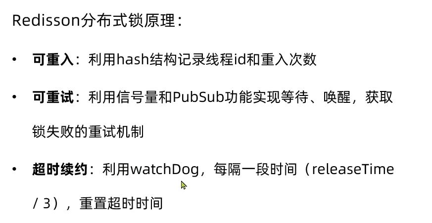
5.5 分布式锁-redission锁的MutiLock原理
用于解决 主从一致性问题
为了提高redis的可用性，我们会搭建集群或者主从，现在以主从为例
此时我们去写命令，写在主机上， 主机会将数据同步给从机，但是假设在主机还没有来得及把数据写入到从机去的时候，此时主机宕机，哨兵会发现主机宕机，并且选举一个slave变成master，而此时新的master中实际上并没有锁信息，此时锁信息就已经丢 掉了。
- NX：Only set if key does Not eXist（键不存在时才设置）
- XX：Only set if key eXists（键存在时才设置）
- EX：设置过期时间（单位：秒）
- PX：设置过期时间（单位：毫秒）
[原笔记图片附件缺失：.\Redis实战篇.assets\1653553998403.png]
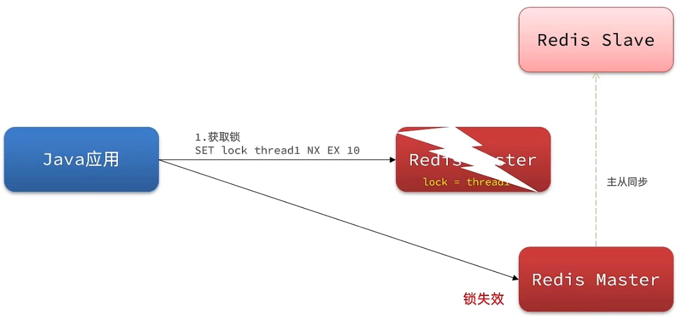
为了解决这个问题，redission提出来了MutiLock锁，使用这把锁咱们就不使用主从了，每个节点的地位都是一样的， 这把锁加锁的逻辑需要写入到每一个主丛节点上，只有所有的服务器都写入成功，此时才是加锁成功，假设现在某个节点挂了，那么他去获得锁的时候，只要有一个节点拿不到，都不能算是加锁成功，就保证了加锁的可靠性。
[原笔记图片附件缺失：.\Redis实战篇.assets\1653554055048.png]
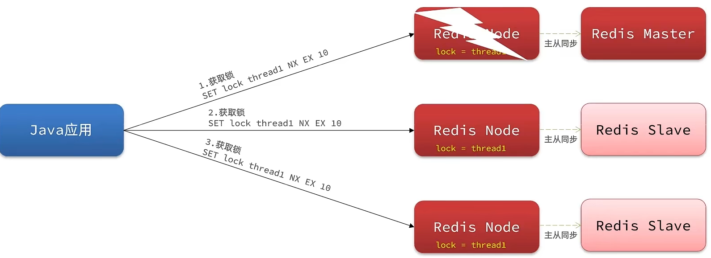
那么MutiLock 加锁原理是什么呢？笔者画了一幅图来说明
当我们去设置了多个锁时，redission会将多个锁添加到一个集合中，然后用while循环去不停去尝试拿锁，但是会有一个总共的加锁时间，这个时间是用需要加锁的个数 * 1500ms ，假设有3个锁，那么时间就是4500ms，假设在这4500ms内，所有的锁都加锁成功， 那么此时才算是加锁成功，如果在4500ms有线程加锁失败，则会再次去进行重试.
[原笔记图片附件缺失：.\Redis实战篇.assets\1653553093967.png] 
悲观
可设置锁的形式 :

6、秒杀优化
6.1 秒杀优化-异步秒杀思路
我们来回顾一下下单流程
当用户发起请求，此时会请求nginx，nginx会访问到tomcat，而tomcat中的程序，会进行串行操作，分成如下几个步骤
1、查询优惠卷
2、判断秒杀库存是否足够
3、查询订单
4、校验是否是一人一单
5、扣减库存
6、创建订单
在这六步操作中，又有很多操作是要去操作数据库的，而且还是一个线程串行执行， 这样就会导致我们的程序执行的很慢，所以我们需要异步程序执行，那么如何加速呢？
在这里笔者想给大家分享一下课程内没有的思路，看看有没有小伙伴这么想，比如，我们可以不可以使用异步编排来做，或者说我开启N多线程，N多个线程，一个线程执行查询优惠卷，一个执行判断扣减库存，一个去创建订单等等，然后再统一做返回，这种做法和课程中有哪种好呢？答案是课程中的好，因为如果你采用我刚说的方式，如果访问的人很多，那么线程池中的线程可能一下子就被消耗完了，而且你使用上述方案，最大的特点在于，你觉得时效性会非常重要，但是你想想是吗？并不是，比如我只要确定他能做这件事，然后我后边慢慢做就可以了，我并不需要他一口气做完这件事，所以我们应当采用的是课程中，类似消息队列的方式来完成我们的需求，而不是使用线程池或者是异步编排的方式来完成这个需求
[原笔记图片附件缺失：.\Redis实战篇.assets\1653560986599.png]
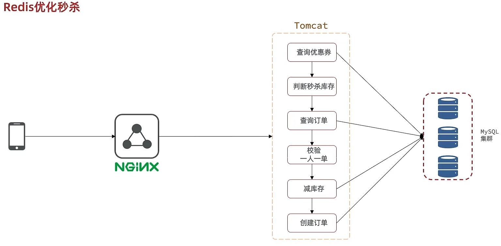
优化方案：我们将耗时比较短的逻辑判断放入到redis中，比如是否库存足够，比如是否一人一单，这样的操作，只要这种逻辑可以完成，就意味着我们是一定可以下单完成的，我们只需要进行快速的逻辑判断，根本就不用等下单逻辑走完，我们直接给用户返回成功， 再在后台开一个线程，后台线程慢慢的去执行queue里边的消息，这样程序不就超级快了吗？而且也不用担心线程池消耗殆尽的问题，因为这里我们的程序中并没有手动使用任何线程池，当然这里边有两个难点
第一个难点是我们怎么在redis中去快速校验一人一单，还有库存判断
第二个难点是由于我们校验和tomct下单是两个线程，那么我们如何知道到底哪个单他最后是否成功，或者是下单完成，为了完成这件事我们在redis操作完之后，我们会将一些信息返回给前端，同时也会把这些信息丢到异步queue中去，后续操作中，可以通过这个id来查询我们tomcat中的下单逻辑是否完成了。
[原笔记图片附件缺失：.\Redis实战篇.assets\1653561657295.png]
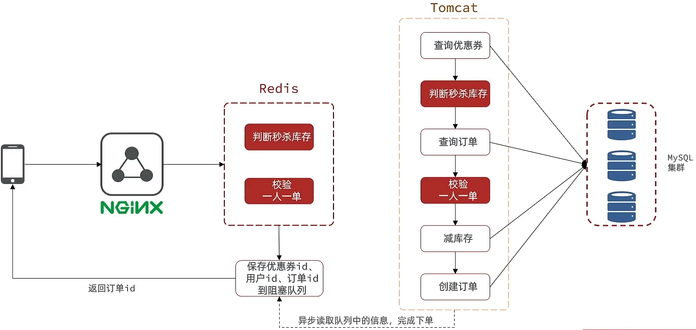
我们现在来看看整体思路：当用户下单之后，判断库存是否充足只需要导redis中去根据key找对应的value是否大于0即可，如果不充足，则直接结束，如果充足，继续在redis中判断用户是否可以下单，
如果set集合中没有这条数据，说明他可以下单，如果set集合中没有这条记录，则将userId和优惠卷存入到redis中，并且返回0，整个过程需要保证是原子性的，我们可以使用lua来操作
当以上判断逻辑走完之后，我们可以判断当前redis中返回的结果是否是0 ，如果是0，则表示可以下单，则将之前说的信息存入到到queue中去，然后返回，然后再来个线程异步的下单，前端可以通过返回的订单id来判断是否下单成功。
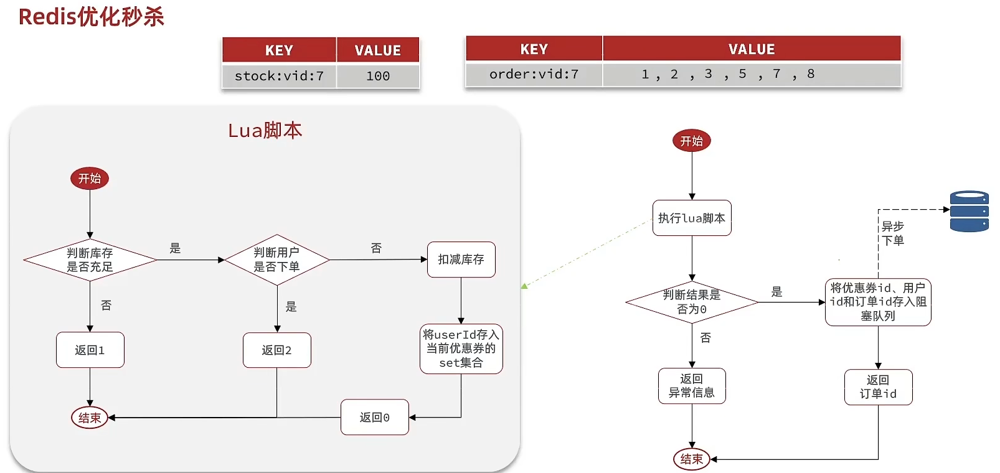
[原笔记图片附件缺失：.\Redis实战篇.assets\1653562234886.png]
6.2 秒杀优化-Redis完成秒杀资格判断
需求：
- 新增秒杀优惠券的同时，将优惠券信息保存到Redis中
- 基于Lua脚本，判断秒杀库存、一人一单，决定用户是否抢购成功
- 如果抢购成功，将优惠券id和用户id封装后存入阻塞队列
- 开启线程任务，不断从阻塞队列中获取信息，实现异步下单功能 [原笔记图片附件缺失：.\Redis实战篇.assets\1656080546603.png]
VoucherServiceImpl
@Override
@Transactional
public void addSeckillVoucher(Voucher voucher) {
// 保存优惠券
save(voucher);
// 保存秒杀信息
SeckillVoucher seckillVoucher = new SeckillVoucher();
seckillVoucher.setVoucherId(voucher.getId());
seckillVoucher.setStock(voucher.getStock());
seckillVoucher.setBeginTime(voucher.getBeginTime());
seckillVoucher.setEndTime(voucher.getEndTime());
seckillVoucherService.save(seckillVoucher);
// 保存秒杀库存到Redis中
//SECKILL_STOCK_KEY 这个变量定义在RedisConstans中
//private static final String SECKILL_STOCK_KEY ="seckill:stock:"
stringRedisTemplate.opsForValue().set(SECKILL_STOCK_KEY + voucher.getId(), voucher.getStock().toString());
}
完整lua表达式
-- 1.参数列表
-- 1.1.优惠券id
local voucherId = ARGV[1]
-- 1.2.用户id
local userId = ARGV[2]
-- 1.3.订单id
local orderId = ARGV[3]
-- 2.数据key
-- 2.1.库存key
local stockKey = 'seckill:stock:' .. voucherId
-- 2.2.订单key
local orderKey = 'seckill:order:' .. voucherId
-- 3.脚本业务
-- 3.1.判断库存是否充足 get stockKey
if(tonumber(redis.call('get', stockKey)) <= 0) then
-- 3.2.库存不足，返回1
return 1
end
-- 3.2.判断用户是否下单 SISMEMBER orderKey userId
if(redis.call('sismember', orderKey, userId) == 1) then
-- 3.3.存在，说明是重复下单，返回2
return 2
end
-- 3.4.扣库存 incrby stockKey -1
redis.call('incrby', stockKey, -1)
-- 3.5.下单（保存用户）sadd orderKey userId
redis.call('sadd', orderKey, userId)
-- 3.6.发送消息到队列中， XADD stream.orders * k1 v1 k2 v2 ...
redis.call('xadd', 'stream.orders', '*', 'userId', userId, 'voucherId', voucherId, 'id', orderId)
return 0
当以上lua表达式执行完毕后，剩下的就是根据步骤3,4来执行我们接下来的任务了
VoucherOrderServiceImpl
@Override
public Result seckillVoucher(Long voucherId) {
//获取用户
Long userId = UserHolder.getUser().getId();
long orderId = redisIdWorker.nextId("order");
// 1.执行lua脚本
Long result = stringRedisTemplate.execute(
SECKILL_SCRIPT,
Collections.emptyList(),
voucherId.toString(), userId.toString(), String.valueOf(orderId)
);
int r = result.intValue();
// 2.判断结果是否为0
if (r != 0) {
// 2.1.不为0 ，代表没有购买资格
return Result.fail(r == 1 ? "库存不足" : "不能重复下单");
}
//TODO 保存阻塞队列
// 3.返回订单id
return Result.ok(orderId);
}
6.3 秒杀优化-基于阻塞队列实现秒杀优化
VoucherOrderServiceImpl
修改下单动作，现在我们去下单时，是通过lua表达式去原子执行判断逻辑，如果判断我出来不为0 ，则要么是库存不足，要么是重复下单，返回错误信息，如果是0，则把下单的逻辑保存到队列中去，然后异步执行
//异步处理线程池
private static final ExecutorService SECKILL_ORDER_EXECUTOR = Executors.newSingleThreadExecutor();
//在类初始化之后执行，因为当这个类初始化好了之后，随时都是有可能要执行的
@PostConstruct
private void init() {
SECKILL_ORDER_EXECUTOR.submit(new VoucherOrderHandler());
}
// 用于线程池处理的任务
// 当初始化完毕后，就会去从对列中去拿信息
private class VoucherOrderHandler implements Runnable{
@Override
public void run() {
while (true){
try {
// 1.获取队列中的订单信息
VoucherOrder voucherOrder = orderTasks.take();
// 2.创建订单
handleVoucherOrder(voucherOrder);
} catch (Exception e) {
log.error("处理订单异常", e);
}
}
}
private void handleVoucherOrder(VoucherOrder voucherOrder) {
//1.获取用户
Long userId = voucherOrder.getUserId();
// 2.创建锁对象
RLock redisLock = redissonClient.getLock("lock:order:" + userId);
// 3.尝试获取锁
boolean isLock = redisLock.lock();
// 4.判断是否获得锁成功
if (!isLock) {
// 获取锁失败，直接返回失败或者重试
log.error("不允许重复下单！");
return;
}
try {
//注意：由于是spring的事务是放在threadLocal中，此时的是多线程，事务会失效
proxy.createVoucherOrder(voucherOrder);
} finally {
// 释放锁
redisLock.unlock();
}
}
//a
private BlockingQueue<VoucherOrder> orderTasks =new ArrayBlockingQueue<>(1024 * 1024);
@Override
public Result seckillVoucher(Long voucherId) {
Long userId = UserHolder.getUser().getId();
long orderId = redisIdWorker.nextId("order");
// 1.执行lua脚本
Long result = stringRedisTemplate.execute(
SECKILL_SCRIPT,
Collections.emptyList(),
voucherId.toString(), userId.toString(), String.valueOf(orderId)
);
int r = result.intValue();
// 2.判断结果是否为0
if (r != 0) {
// 2.1.不为0 ，代表没有购买资格
return Result.fail(r == 1 ? "库存不足" : "不能重复下单");
}
VoucherOrder voucherOrder = new VoucherOrder();
// 2.3.订单id
long orderId = redisIdWorker.nextId("order");
voucherOrder.setId(orderId);
// 2.4.用户id
voucherOrder.setUserId(userId);
// 2.5.代金券id
voucherOrder.setVoucherId(voucherId);
// 2.6.放入阻塞队列
orderTasks.add(voucherOrder);
//3.获取代理对象
proxy = (IVoucherOrderService)AopContext.currentProxy();
//4.返回订单id
return Result.ok(orderId);
}
@Transactional
public void createVoucherOrder(VoucherOrder voucherOrder) {
Long userId = voucherOrder.getUserId();
// 5.1.查询订单
int count = query().eq("user_id", userId).eq("voucher_id", voucherOrder.getVoucherId()).count();
// 5.2.判断是否存在
if (count > 0) {
// 用户已经购买过了
log.error("用户已经购买过了");
return ;
}
// 6.扣减库存
boolean success = seckillVoucherService.update()
.setSql("stock = stock - 1") // set stock = stock - 1
.eq("voucher_id", voucherOrder.getVoucherId()).gt("stock", 0) // where id = ? and stock > 0
.update();
if (!success) {
// 扣减失败
log.error("库存不足");
return ;
}
save(voucherOrder);
}
小总结：
秒杀业务的优化思路是什么？
先利用Redis完成库存余量、一人一单判断，完成抢单业务 // 使用lua脚本实现用redis命令块
再将下单业务放入阻塞队列，利用独立线程异步下单
private BlockingQueue<VoucherOrder> orderTasks = new ArrayBlockingQueue<>(1024 * 1024) ;
内部实现的阻塞队列 : 内部没有元素的时候 , 线程访问会被直接阻塞 ;
基于阻塞队列的异步秒杀存在哪些问题？
内存限制问题
保存在 JVM 内存中 , 万一存满后 , 会直接丢失
- 数据安全问题
服务宕机, 你用户也得栽
7、Redis消息队列 (了解一下就行)
7.1 Redis消息队列-认识消息队列
什么是消息队列：字面意思就是存放消息的队列。最简单的消息队列模型包括3个角色：
- 消息队列：存储和管理消息，也被称为消息代理（Message Broker）
- 生产者：发送消息到消息队列
- 消费者：从消息队列获取消息并处理消息
[原笔记图片附件缺失：.\Redis实战篇.assets\1653574849336.png]
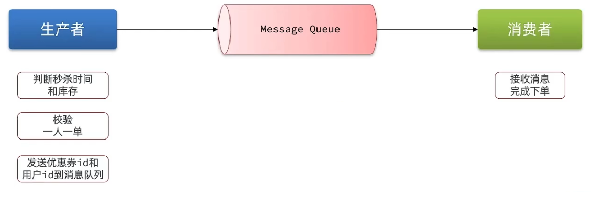
使用队列的好处在于 **解耦：**所谓解耦，举一个生活中的例子就是：快递员(生产者)把快递放到快递柜里边(Message Queue)去，我们(消费者)从快递柜里边去拿东西，这就是一个异步，如果耦合，那么这个快递员相当于直接把快递交给你，这事固然好，但是万一你不在家，那么快递员就会一直等你，这就浪费了快递员的时间，所以这种思想在我们日常开发中，是非常有必要的。
这种场景在我们秒杀中就变成了：我们下单之后，利用redis去进行校验下单条件，再通过队列把消息发送出去，然后再启动一个线程去消费这个消息，完成解耦，同时也加快我们的响应速度。
这里我们可以使用一些现成的mq，比如kafka，rabbitmq等等，但是呢，如果没有安装mq，我们也可以直接使用redis提供的mq方案，降低我们的部署和学习成本。
7.2 Redis消息队列-基于List实现消息队列
基于List结构模拟消息队列
消息队列（Message Queue），字面意思就是存放消息的队列。而Redis的list数据结构是一个双向链表，很容易模拟出队列效果。
队列是入口和出口不在一边，因此我们可以利用：LPUSH 结合 RPOP、或者 RPUSH 结合 LPOP来实现。
不过要注意的是，当队列中没有消息时RPOP或LPOP操作会返回null，并不像JVM的阻塞队列那样会阻塞并等待消息。因此这里应该使用BRPOP或者BLPOP来实现阻塞效果。
使用 BRPOP 和 BLPOP 实现阻塞的效果 ;
创建一个 LPUSH 实现队列 l1 e1 e2 --> BRPOP l1 (可加阻塞时长) --> 会获取 + 删除先进入的e1 , 在获取会获取删除 e2 ;
[原笔记图片附件缺失：.\Redis实战篇.assets\1653575176451.png]
基于List的消息队列有哪些优缺点？
优点：
- 利用Redis存储，不受限于JVM内存上限
- 基于Redis的持久化机制，数据安全性有保证
- 可以满足消息有序性
缺点：
- 无法避免消息丢失
- 只支持单消费者
7.3 Redis消息队列-基于PubSub的消息队列
PubSub（发布订阅）是Redis2.0版本引入的消息传递模型。顾名思义，消费者可以订阅一个或多个channel，生产者向对应channel发送消息后，所有订阅者都能收到相关消息。
PUBLISH channel msg ：向一个频道发送消息
SUBSCRIBE channel [channel] ：订阅一个或多个频道
PSUBSCRIBE pattern[pattern] ：订阅与pattern格式匹配的所有频道 . (支持通配符)
? --> 不确定但数量确定为 1 个 ,
* 啥都确定不了 ,
[ar ] 只能填内部的字符
[原笔记图片附件缺失：.\Redis实战篇.assets\1653575506373.png]
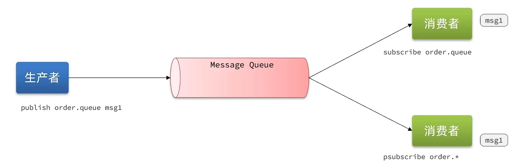
基于PubSub的消息队列有哪些优缺点？
优点：
- 采用发布订阅模型，支持多生产、多消费
缺点：
- 不支持数据持久化
- 无法避免消息丢失
- 消息堆积有上限，超出时数据丢失
具体实现还是在 redis 中 :
7.4 Redis消息队列-基于Stream的消息队列(创建消息队列)
Stream 是 Redis 5.0 引入的一种新数据类型，可以实现一个功能非常完善的消息队列。
发送消息的命令：
[原笔记图片附件缺失：.\Redis实战篇.assets\1653577301737.png]
例如：
添加 : XADD s1(对象) *(id) k1 v1(键值对)
[原笔记图片附件缺失：.\Redis实战篇.assets\1653577349691.png] XLEN s1 可以查看消息数量
读取消息的方式之一：XREAD
读取 : XREAD COUNT 1 (BLOCK 0) STREAMS s1 0 , 可以被多个用户读 , 可读多次 , 实现的是一种持久化的数据格式 ;
例如，使用XREAD读取第一个消息： [原笔记图片附件缺失：.\Redis实战篇.assets\1653577643629.png]
XREAD阻塞方式，读取最新的消息：
[原笔记图片附件缺失：.\Redis实战篇.assets\1653577659166.png] 会直接漏掉 开启之前的全部消息 :
在业务开发中，我们可以循环的调用XREAD阻塞方式来查询最新消息，从而实现持续监听队列的效果，伪代码如下
[原笔记图片附件缺失：.\Redis实战篇.assets\1653577689129.png]
注意：当我们指定起始ID为$时，代表读取最新的消息，如果我们处理一条消息的过程中，又有超过1条以上的消息到达队列，则下次获取时也只能获取到最新的一条，会出现漏读消息的问题
STREAM类型消息队列的XREAD命令特点：
- 消息可回溯
- 一个消息可以被多个消费者读取
- 可以阻塞读取
- 有消息漏读的风险
7.5 Redis消息队列-基于Stream的消息队列-消费者组(获取消息队列)
消费者组（Consumer Group）：将多个消费者划分到一个组中，监听同一个队列。具备下列特点：
[原笔记图片附件缺失：.\Redis实战篇.assets\1653577801668.png]
创建消费者组：
[原笔记图片附件缺失：.\Redis实战篇.assets\1653577984924.png]
key：队列名称
groupName：消费者组名称
ID：起始ID标示，$代表队列中最后一个消息，0则代表队列中第一个消息
MKSTREAM：队列不存在时自动创建队列
其它常见命令：
删除指定的消费者组
XGROUP DESTORY key groupName
给指定的消费者组添加消费者
XGROUP CREATECONSUMER key groupname consumername
删除消费者组中的指定消费者
XGROUP DELCONSUMER key groupname consumername
从消费者组读取消息：消费者名可以随便 , 没有的话会自己实现创建
XREADGROUP GROUP group consumer [COUNT count] [BLOCK milliseconds] [NOACK] STREAMS key [key ...] ID [ID ...]
- group：消费组名称 , 这个需要自己实现创建 ;
- consumer：消费者名称，如果消费者不存在，会自动创建一个消费者
- count：本次查询的最大数量
- BLOCK milliseconds：当没有消息时最长等待时间
- NOACK：无需手动ACK，获取到消息后自动确认
- STREAMS key：指定队列名称
- ID：获取消息的起始ID：
保证每一条消息都被获取到 都被消费的基础 :
">"：从下一个未消费的消息开始****其它：
根据指定id从pending-list中获取已消费但未确认的消息
例如0，是从pending-list中的第一个消息开始
确认进入 pending-list 中的待定消息 :
XACK s1(key名 , stream名字) g1(消费者名称) [members 消息消费id ]
消费者监听消息的基本思路：
出现 异常 之后 立马 把 ">" 修改使用 "0"
会将取出对象的 表单 转化为 pending-list 中获取数据
[原笔记图片附件缺失：.\Redis实战篇.assets\1653578211854.png] STREAM类型消息队列的XREADGROUP命令特点：
- 消息可回溯
- 可以多消费者争抢消息，加快消费速度
- 可以阻塞读取
- 没有消息漏读的风险
- 有消息确认机制，保证消息至少被消费一次
最后我们来个小对比
[原笔记图片附件缺失：.\Redis实战篇.assets\1653578560691.png]
7.6 基于Redis的Stream结构作为消息队列，实现异步秒杀下单
需求：
- 创建一个Stream类型的消息队列，名为stream.orders
- 修改之前的秒杀下单Lua脚本，在认定有抢购资格后，直接向stream.orders中添加消息，内容包含voucherId、userId、orderId
- 项目启动时，开启一个线程任务，尝试获取stream.orders中的消息，完成下单\
修改lua表达式,新增3.6
[原笔记图片附件缺失：.\Redis实战篇.assets\1656082824939.png]
VoucherOrderServiceImpl
private class VoucherOrderHandler implements Runnable {
@Override
public void run() {
while (true) {
try {
// 1.获取消息队列中的订单信息 XREADGROUP GROUP g1 c1 COUNT 1 BLOCK 2000 STREAMS s1 >
List<MapRecord<String, Object, Object>> list = stringRedisTemplate.opsForStream().read(
Consumer.from("g1", "c1"),
StreamReadOptions.empty().count(1).block(Duration.ofSeconds(2)),
StreamOffset.create("stream.orders", ReadOffset.lastConsumed())
);
// 2.判断订单信息是否为空
if (list == null || list.isEmpty()) {
// 如果为null，说明没有消息，继续下一次循环
continue;
}
// 解析数据
MapRecord<String, Object, Object> record = list.get(0);
Map<Object, Object> value = record.getValue();
VoucherOrder voucherOrder = BeanUtil.fillBeanWithMap(value, new VoucherOrder(), true);
// 3.创建订单
createVoucherOrder(voucherOrder);
// 4.确认消息 XACK
stringRedisTemplate.opsForStream().acknowledge("s1", "g1", record.getId());
} catch (Exception e) {
log.error("处理订单异常", e);
//处理异常消息
handlePendingList();
}
}
}
private void handlePendingList() {
while (true) {
try {
// 1.获取pending-list中的订单信息 XREADGROUP GROUP g1 c1 COUNT 1 BLOCK 2000 STREAMS s1 0
List<MapRecord<String, Object, Object>> list = stringRedisTemplate.opsForStream().read(
Consumer.from("g1", "c1"),
StreamReadOptions.empty().count(1),
StreamOffset.create("stream.orders", ReadOffset.from("0"))
);
// 2.判断订单信息是否为空
if (list == null || list.isEmpty()) {
// 如果为null，说明没有异常消息，结束循环
break;
}
// 解析数据
MapRecord<String, Object, Object> record = list.get(0);
Map<Object, Object> value = record.getValue();
VoucherOrder voucherOrder = BeanUtil.fillBeanWithMap(value, new VoucherOrder(), true);
// 3.创建订单
createVoucherOrder(voucherOrder);
// 4.确认消息 XACK
stringRedisTemplate.opsForStream().acknowledge("s1", "g1", record.getId());
} catch (Exception e) {
log.error("处理pendding订单异常", e);
try{
Thread.sleep(20);
}catch(Exception e){
e.printStackTrace();
}
}
}
}
}